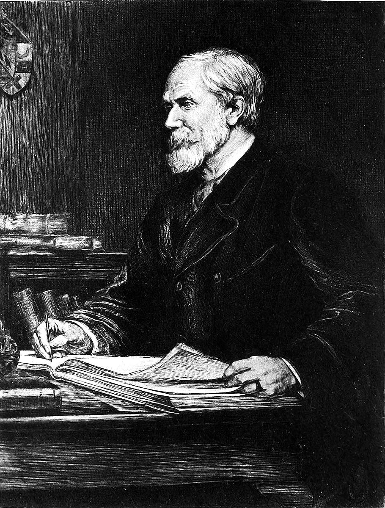
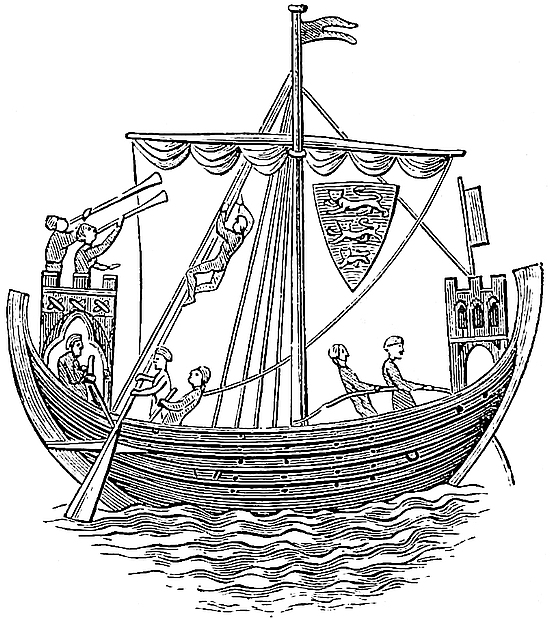
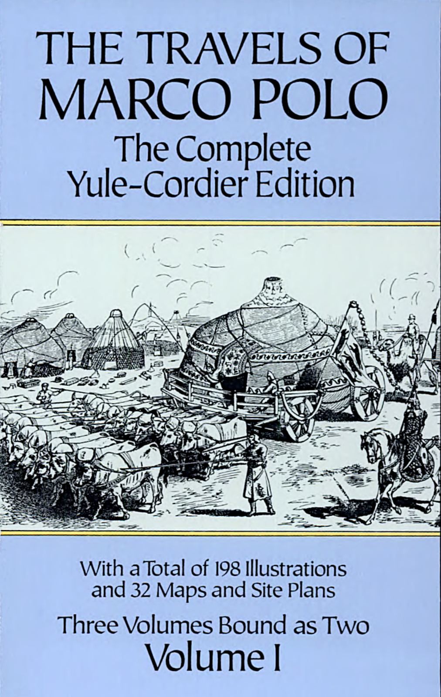

원작자: 마르코 폴로 (Marco Polo, 1254–1324)
공동 기록자: 루스티켈로 다 피사 (Rusticiano of Pisa)
영문 원전: Sir Henry Yule, K.C.S.I., C.B., LL.D. & Henri Cordier (London: John Murray, 3rd Edition, 1903)
원전 제공: Project Gutenberg (eBook #10636 & #12410, Unabridged Complete Edition)
번역 및 조판: Antigravity 디지털 문헌 편찬팀
발행일: 2026년 11월 (전권 완역 디지털 단행본)
[일러두기]
1. 본 번역본은 구텐베르크 프로젝트(Project Gutenberg)에 공개된 헨리 율 경(Sir Henry Yule)의 마르코 폴로 《동방견문록》 완전본을 저본으로 삼아, 서문(Prologue)을 비롯하여 제1권, 제2권, 제3권, 제4권에 이르는 총 234개 장 전체 본문을 한 글자도 빠짐없이 한국어로 완역하였습니다.
2. 중세 몽골어, 페르시아어, 튀르크어, 중국어 고유명사는 원문의 표기를 존중하되 국립국어원 외래어 표기법 및 표준 역사 용어와 대조하여 현대 독자들이 쉽게 이해할 수 있도록 병기하였습니다. (예: 대도(칸발리크/북경), 킨사이(항저우/임안), 지팡구(일본), 상도(개평부/샹두), 얌(역참 제도) 등)
3. 헨리 율 판본에 수록된 14세기 원본 채색 필사본 삽화, 당시의 화폐와 유물, 궁정 어진 및 여행 경로 지도를 각 권과 해당 장에 고화질로 복원 배치하였습니다.


PRELIMINARY ADDRESS OF RUSTICIANO OF PISA
위대한 황제와 국왕, 제후와 후작, 백작, 기사, 시민, 그리고 세상의 온갖 종족과 각양각색의 풍토와 기이한 일들을 알고자 하는 모든 이들이여! 이 책을 받아 낭독하게 하라.
그대들은 이 책 안에서 지극히 놀라운 기적들과 대(大)아르메니아, 페르시아, 타타르인들의 땅(몽골 제국), 인도, 그리고 우리 책이 차례차례 소상히 이야기할 수많은 나라들의 다채로운 역사를 발견하게 될 것이다. 이는 현명하고 고귀한 베네치아의 시민 마르코 폴로(Messer Marco Polo) 경이 자신의 두 눈으로 직접 목도한 바에 따라 서술한 것이다.
비록 그가 직접 보지 못한 일들도 일부 실려 있으나, 이는 모두 신뢰할 수 있고 진실한 이들로부터 직접 전해 들은 것들이다. 우리는 본 것은 본 대로, 들은 것은 오직 들은 대로만 기록하여 한 점의 거짓도 우리 책의 진실성을 훼손하지 않도록 하였으니, 이를 읽거나 듣는 모든 이가 온전한 믿음을 품을 수 있을 것이다.
단언하건대, 하나님께서 우리 조상 아담을 빚으신 이래 오늘날에 이르기까지, 기독교인이든 이교도든 타타르인이든 인도인이든 간에, 마르코 폴로 경만큼 세상의 드넓고 경이로운 지역들을 깊이 탐사하고 샅샅이 파악한 자는 일찍이 없었다. 그는 스스로 마음속에 품기를, '만약 내가 목도한 이 거대한 경이들을 글로 남겨 세상에 알리지 않는다면 실로 크나큰 죄악이 되리라' 생각하였다. 왜냐하면 그가 본 것들을 직접 보지 못한 자들은 평생 이를 알 길이 없기 때문이다.
그리하여 그는 주후 1298년 제노바의 감옥에 갇혀 있을 당시, 그곳에 함께 갇혀 있던 피사의 시민 루스티켈로(Rusticiano of Pisa)에게 이 모든 견문을 구술하여 기록하게 하였으니, 이것이 바로 마르코 폴로 경의 여행기 전체의 내력이다.
HOW THE TWO BROTHERS POLO SET FORTH FROM CONSTANTINOPLE TO TRAVERSE THE WORLD.
그리스도 강생 1260년, 보두앵(Baldwin) 황제가 콘스탄티노플을 다스리고 있을 때의 일이다. 마르코 폴로 경의 부친인 니콜로 폴로(Messer Nicolas Polo) 경과 그의 숙부 마페오 폴로(Messer Maffeo Polo) 경은 현명하고 위엄 있는 귀족 상인들로서 베네치아를 떠나 장사를 위해 배를 타고 콘스탄티노플로 건너왔다.
두 형제는 많은 값비싼 보석과 보물들을 지니고 있었는데, 지혜로운 상의 끝에 콘스탄티노플을 출발하여 흑해를 건너 대타타르인들의 영토로 깊이 들어가 무역을 벌이기로 뜻을 모았다.
HOW THE TWO BROTHERS WENT ON BEYOND SOLDAIA.
두 형제는 말을 구입하여 솔다이아(Soldaia, 현재 크림반도의 수다크)를 떠났다. 그들은 며칠 동안 아무런 해도 입지 않고 평안히 길을 나아갔으며, 마침내 킵차크 한국의 서방 타타르 제국을 다스리던 베르케 칸(Barka Kaan)의 진영에 당도하였다. 베르케 칸은 볼가강 유역의 볼가르(Bolghar)와 사라이(Sarai)에 거처하고 있었다.
베르케 칸은 이 두 베네치아 형제를 지극히 정중하고 친절하게 맞아들였으며, 두 형제가 바친 눈부신 보석들을 보고 크게 기뻐하였다. 칸은 보석의 가치보다 배나 많은 황금과 재물을 하사하며 후대하였다.
형제는 베르케 칸의 궁정에 일 년 동안 머물렀는데, 바로 그 무렵 동방의 타타르 군주인 훌라구(Hulaku, 일한국의 시조)와 베르케 칸 사이에 격렬한 전쟁이 발발하였다. 양측의 대군이 맞붙어 수많은 사상자가 발생하였고, 결국 훌라구가 승리를 거두었다. 이 전쟁으로 인해 사방의 도로가 끊기고 약탈이 횡행하여 두 형제는 왔던 길로 콘스탄티노플로 되돌아갈 수 없게 되었다. 이에 그들은 동쪽으로 우회하여 귀환하기로 결심하였다.
HOW THE TWO BROTHERS, AFTER CROSSING A DESERT, CAME TO THE CITY OF BOCARA, AND FELL IN WITH CERTAIN ENVOYS THERE.
사라이를 출발한 두 형제는 티그리스강(실제로는 볼가강 하류 및 우랄강)을 건넜으며, 사람의 발길이 닿지 않는 거대한 사막을 열이틀 동안 가로질러야 했다. 마침내 그들은 페르시아 최북단의 거대한 도시 부하라(Bocara)에 도달하였다. 부하라는 매우 훌륭하고 부유한 대도시였다.
그 무렵 부하라는 차가타이 한국의 바락(Barak) 칸의 지배 아래 있었다. 그러나 그곳에서도 정세가 어지러워 앞으로도 뒤로도 나아갈 수 없었기에 두 형제는 부하라에서 장장 3년을 머물러야 했다.
그때 놀라운 일이 일어났다. 온 세상의 타타르인들을 다스리는 최고 통치자, 즉 위대한 대칸 쿠빌라이(The Great Kaan)에게로 향하던 훌라구 칸의 사절단이 부하라를 지나게 된 것이다. 이 사절단은 일찍이 라틴인(유럽인)을 본 적이 없었으나, 두 형제가 타타르어와 몽골 풍습에 능통하고 품위 있는 예절을 갖춘 것을 보고 경탄을 금치 못했다.
사절단의 수장이 형제에게 청하기를, "귀공들이여, 나와 함께 위대한 카안의 조정으로 가시지 않겠소? 대칸께서는 라틴인을 한 번도 보지 못하셨기에 귀공들을 보시면 필시 헤아릴 수 없는 호의와 영예를 베푸실 것이오"라고 설득하였다.
HOW THE TWO BROTHERS TOOK THE ENVOYS’ COUNSEL, AND WENT TO THE COURT OF THE GREAT KAAN.
두 형제는 고향으로 돌아갈 길이 막힌 상황에서 이것이 하늘이 내린 기회임을 깨닫고 흔쾌히 사절단의 제안을 수락하였다.
그들은 사절단과 함께 동북쪽을 향해 길고 험난한 여정에 올랐다. 눈 덮인 거대한 산맥과 끝없는 황야, 거친 강들을 건너며 일 년 동안 쉼 없이 나아간 끝에, 마침내 온 세상의 군주 쿠빌라이 대칸이 머물고 있는 찬란한 궁정에 당도하였다.
HOW THE TWO BROTHERS ARRIVED AT THE COURT OF THE GREAT KAAN.
위대한 대칸 쿠빌라이는 이 두 라틴인 형제가 궁정에 도착했다는 보고를 받고 크게 기뻐하였다. 그는 사절단과 함께 형제를 황금 옥좌로 불러들여 지극한 영예로써 환대하였다.
두 형제는 몽골어와 타타르 풍습에 유창하였으므로, 대칸의 모든 질문에 지혜롭고 정중한 어조로 거침없이 답변하여 대칸과 모든 황실 제후들의 찬탄을 한 몸에 받았다.
HOW THE GREAT KAAN ASKED ALL ABOUT THE MANNERS OF THE CHRISTIANS, AND PARTICULARLY ABOUT THE POPE OF ROME.
대칸은 형제에게 라틴인들의 통치 방식과 정의, 황제와 제후들의 권력, 그리고 기독교 국가들의 군사력에 관해 자세히 캐물었다.
특히 대칸은 로마의 사도좌(교황)와 교회의 가르침, 성직자들의 직분과 기독교의 신앙에 대해 비상한 관심을 기울이며 깊이 있게 질문하였다. 니콜로와 마페오 두 형제는 모든 질문에 대해 명석하고 조리 있게 진실을 아뢰었다.
HOW THE GREAT KAAN SENT THE TWO BROTHERS AS HIS ENVOYS TO THE POPE.
두 형제의 정직함과 지혜를 깊이 신임한 쿠빌라이 대칸은 중대한 결단을 내렸다. 그는 두 형제를 자신의 친서와 함께 로마 교황에게 파견하기로 결정하였으며, 자신의 신하인 코가탈(Cogatal)이라는 몽골 귀족을 부사(副使)로 동행시켰다.
대칸은 친서에서 로마 교황에게 간곡히 청하기를, 기독교 칠예(七藝, 문법·수사학·논리학·산술·기하학·음악·천문학)에 통달하고 신앙심이 깊으며 능변으로 이교도 학자들을 설득할 수 있는 100명의 현명한 학자이자 사제들을 파견해 달라고 요청하였다. 만약 그들이 이교 우상 숭배의 오류를 입증한다면, 자신과 모든 신하와 백성들이 기독교로 개종하겠다는 파격적인 뜻을 밝혔다.
아울러 대칸은 예루살렘의 주님 무덤 위에 항상 타오르고 있는 거룩한 성유(聖油, Holy Oil)를 조금 가져와 달라고 간청하였다.
HOW THE GREAT KAAN GAVE THEM A TABLET OF GOLD, BEARING HIS ORDERS IN THEIR BEHALF.
사절로서의 임무를 맡긴 대칸은 두 형제에게 몽골 제국의 최고 권위를 상징하는 황금 파이자(Paiza, 금패)를 하사하였다.
이 황금패에는 대칸의 칙령이 새겨져 있었으니, "온 천하의 신하와 백성들은 이 사절단이 지나는 곳마다 말과 숙소, 호위병과 필요한 모든 물자를 무상으로 공출하고 극진히 보호하라"는 명령이었다.
사절단은 출발하였으나 도중에 몽골 관리 코가탈이 중병에 걸려 뒤에 남겨졌고, 두 형제는 황금 파이자의 위력 덕분에 제국 전역에서 왕과 같은 환대를 받으며 무사히 3년 만에 지중해 연안의 아크레(Acre, 악코) 항구에 당도하였다.
HOW THE TWO BROTHERS CAME TO THE CITY OF ACRE.
주후 1269년 4월, 두 형제는 십자군 요충지인 아크레에 도착하였다. 그러나 그곳에서 청천벽력 같은 소식을 들었으니, 교황 클레멘스 4세가 서거하였고 추기경들의 의견 대립으로 2년 넘게 후임 교황이 선출되지 못하고 공석(사도좌 공석) 상태라는 사실이었다.
아크레에는 교황청의 레가토(전권 특사)인 피아첸차의 테오발도(Theobald of Piacenza) 추기경이 머물고 있었다. 두 형제는 그를 알현하여 대칸의 친서와 사명을 소상히 전하였다. 테오발도 주교는 새 교황이 선출될 때까지 기다리는 것이 옳다고 조언하였다.
이에 두 형제는 새 교황 선출을 기다리는 동안 15년간 떠나 있던 고향 베네치아로 돌아가 가족들을 만나보기로 결심하였다.
HOW THE TWO BROTHERS AGAIN DEPARTED FROM VENICE, ON THEIR WAY BACK TO THE GREAT KAAN, AND TOOK WITH THEM MARK, THE SON OF MESSER NICOLAS.
니콜로 폴로가 고향 베네치아의 집에 돌아왔을 때, 비극적이게도 그의 아내는 이미 세상을 떠난 뒤였다. 그러나 그녀는 니콜로가 떠난 해에 태어난 아들 하나를 남겨두었으니, 그 소년이 바로 15세의 총명하고 늠름한 마르코 폴로(Marco Polo)였다.
두 형제는 베네치아에서 2년 동안 머물며 교황 선출 소식을 기다렸으나, 교황좌는 여전히 비어 있었다. 대칸과의 약속 기한이 지체되는 것을 염려한 형제는 마침내 17세가 된 소년 마르코 폴로를 대동하고 다시 아크레로 떠나기로 결단하였다.
HOW THE TWO BROTHERS SET OUT FROM ACRE, AND MARK ALONG WITH THEM.
주후 1271년, 두 형제와 소년 마르코는 아크레에 당도하여 교황 특사 테오발도의 허락을 얻어 예루살렘으로 갔다. 그들은 그리스도의 성묘 위에 밤낮으로 켜져 있는 등잔에서 성유(聖油)를 정결한 용기에 정성껏 담았다.
그들은 대칸에게 돌아가 "교황이 아직 선출되지 않아 사제들을 모셔오지 못했으나, 약속하신 거룩한 성유는 구해 왔나이다"라고 보고하기 위해 북쪽의 라이아스(Lajazzo, 아르메니아 해안)로 나아갔다.
HOW THE TWO BROTHERS PRESENTED THEMSELVES BEFORE THE NEW POPE.
형제가 라이아스에 도착했을 때, 교황청에서 급보가 날아왔다. 3년 만에 드디어 새 교황이 선출되었는데, 놀랍게도 바로 아크레에서 그들을 만났던 테오발도 추기경이 교황 그레고리오 10세(Gregory X)로 선출된 것이었다!
새 교황은 사절을 보내 폴로 일행을 급히 아크레로 다시 불러들였다. 교황은 대칸의 편지를 읽고 감격하여 축복을 내리고, 도미니코 수도회의 가장 학식 높은 두 명의 수도사령관인 니콜로 다 비첸차(Nicholas of Vicenza)와 굴리엘모 다 트리폴리(William of Tripoli)를 동행시켰다. 아울러 대칸에게 보내는 교황의 답서와 값진 성물들을 하사하였다.
그러나 일행이 아르메니아 영내로 들어섰을 때, 이집트 맘루크 술탄 바이바르스의 군대가 소아시아를 침공하여 대규모 살육과 방화가 일어나자, 겁에 질린 두 수도사는 더 이상 동방으로 나아가지 못하고 회군해 버렸다. 그러나 폴로 형제와 젊은 마르코는 목숨을 걸고 전진을 계속하였다.
HOW MESSER NICOLO AND MESSER MAFFEO POLO, ACCOMPANIED BY MARK, TRAVELLED TO THE COURT OF THE GREAT KAAN.
폴로 일행은 겨울의 혹한과 여름의 살인적인 폭염, 험준한 산악 지대와 끝없는 사막을 건너며 동쪽으로 나아갔다. 이 여정은 장장 3년 반이나 소요되었다.
대칸 쿠빌라이는 폴로 일행이 접근하고 있다는 소식을 사서(전령)를 통해 미리 듣고, 그들이 도착하기 40일 전부터 국경 밖으로 수많은 관리와 호위대를 마중 보내어 모든 숙소와 편의를 극진히 제공하도록 조처하였다.
HOW MESSER NICOLO AND MESSER MAFFEO POLO AND MARCO PRESENTED THEMSELVES BEFORE THE GREAT KAAN.
상도(Chandu, 샹두)의 궁전에 도착한 두 형제와 마르코는 수많은 귀족과 장군들이 도열한 가운데 황금 옥좌에 앉은 대칸 쿠빌라이 앞에 엎드려 경의를 표했다.
대칸은 그들을 따뜻하게 일으켜 세우고 지난 9년간의 여정과 교황에 관한 모든 일을 물었다. 형제는 교황의 편지와 예루살렘의 거룩한 성유를 헌상하였고, 대칸은 성유를 받아 공경히 모시도록 명령했다.
이어 대칸이 젊은 마르코를 가리키며 "이 젊은이는 누구인가?"라고 묻자, 니콜로 폴로는 "대칸이시여, 이 아이는 폐하의 충직한 종이자 저의 아들입니다"라고 아뢰었다. 대칸은 "참으로 훌륭하도다!"라며 마르코를 총애하여 황실의 귀족 대열에 이름을 올리게 하였다.
HOW THE EMPEROR SENT MARK ON AN EMBASSY OF HIS.
마르코 폴로는 비상한 기억력과 통찰력을 지녔으며, 궁궐에 머무는 동안 타타르족의 네 가지 언어와 문자를 완벽하게 습득하였다.
대칸은 마르코의 비범한 재능을 눈여겨보고, 수도에서 6개월이나 걸리는 머나먼 카라잔(Carajan, 윈난성) 지방으로 그를 어명 특사로 파견하였다. 마르코는 황제의 명을 한 치의 오차도 없이 성공적으로 완수하였다.
HOW MARK RETURNED FROM THE MISSION WHEREON HE HAD BEEN SENT.
마르코는 다른 사절들이 공무만 보고하고 그 고장의 신기한 풍습이나 지리, 백성들의 생활상을 전혀 황제에게 아뢰지 않아 대칸이 늘 답답해했다는 사실을 익히 알고 있었다.
이에 마르코는 임무를 수행하는 동안 그 고장의 모든 기이한 풍물과 산천초목, 관습과 특산물을 꼼꼼히 기록해 두었다가 대칸에게 흥미진진하게 보고하였다. 대칸은 "이 젊은이가 이토록 총명하고 견문이 넓으니, 진실로 지혜로운 현자로다!"라며 마르코를 제국 최고의 신하로 아끼고 중용하였다. 이후 17년 동안 마르코는 제국 방방곡곡을 누비며 대칸의 특사로 활약하였다.
HOW MESSER NICOLO, MESSER MAFFEO, AND MESSER MARCO, ASKED LEAVE OF THE GREAT KAAN TO GO THEIR WAY.
폴로 일행은 대칸의 조정에서 막대한 황금과 보화를 모았고 최고의 권세를 누렸다. 그러나 세월이 흘러 대칸 쿠빌라이의 연세가 매우 고령에 이르렀다. 그들은 대칸이 붕어(서거)할 경우, 외국인인 자신들이 황위 계승 전쟁 속에서 목숨을 보전하기 어려울 것임을 예견하고 고향 베네치아로 돌아갈 길을 모색하였다.
니콜로 폴로가 대칸에게 나아가 은혜에 감사하며 고향으로 돌아가게 해달라고 간청하였으나, 대칸은 노여워하며 "그대들이 원하는 모든 부귀영화를 내릴 터이니 내 곁을 떠날 생각은 결코 하지 말라"며 귀환을 일언지하에 거절하였다.
HOW THE TWO BROTHERS AND MESSER MARCO TOOK LEAVE OF THE GREAT KAAN, AND RETURNED TO THEIR OWN COUNTRY.
그 무렵, 페르시아를 다스리던 훌라구의 손자 아르군(Arghun) 칸의 정비 볼가나(Bolgana) 황후가 서거하며 유언을 남겼다. "나와 같은 칭기즈칸 황실 콩기라트 부족의 규수가 아니면 내 자리를 잇게 하지 말라." 이에 아르군 칸은 세 명의 고위 사절(울라타이, 압푸스카, 코자)을 대칸 쿠빌라이에게 파견하여 새 신붓감을 요청하였다.
대칸은 17세의 눈부시게 아름답고 고귀한 공주 코카친(Cocachin)을 새 황후로 선발하였다. 그러나 페르시아로 향하는 육로가 유목 제국들 간의 전쟁으로 막히자 사절단은 해로(인도양)를 통해 귀환해야 했다. 바로 이때 인도양의 험난한 파도와 해상 항해에 능통한 마르코 폴로가 인도 항로에서 막 돌아왔다.
페르시아 사절단은 대칸에게 간곡히 탄원하기를, 노련한 세 베네치아인(니콜로, 마페오, 마르코)이 공주의 해상 여정을 호위하게 해달라고 청하였다. 대칸은 마지못해 이를 허락하고, 거대한 4개 돛을 단 대형 쾌속 함선 14척에 600명의 선원과 2년 치 식량을 싣고 떠나도록 조처하였다.
대칸은 세 형제에게 교황과 프랑스 왕, 영국 왕, 스페인 왕 등 서방 군주들에게 보내는 황금 파이자와 친서를 주며 눈물로 작별을 고했다.
일행은 남중국 천주(자이툰)를 출항하여 자바, 수마트라, 실론, 인도를 돌아 2년여 만에 호르무즈에 도착하였다. 600명의 수행원 중 오직 18명과 공주만이 생존할 정도로 험난한 항해였다. 그 사이 페르시아의 아르군 칸이 사망하여 공주는 그의 아들 가잔(Ghazan) 칸과 혼례를 올렸다.
공주와 애틋한 작별을 고한 폴로 일행은 트레비존드와 콘스탄티노플을 거쳐, 마침내 주후 1295년, 출발한 지 장장 24년 만에 막대한 보석들을 옷단에 숨겨 꿰맨 채 고향 베네치아로 영광스럽게 귀환하였다.
HERE THE BOOK BEGINS; AND FIRST IT SPEAKS OF THE LESSER HERMENIA.
소아르메니아(Lesser Hermenia)에는 두 개의 중요한 지구가 있는데, 하나는 군사 귀족들이 통치하고 다른 하나는 국왕이 다스린다. 이 국왕은 정의롭게 나라를 통치하며 타타르(일한국)의 종주권을 인정하고 조공을 바친다.
이 나라에는 수많은 성채와 훌륭한 도시들이 즐비하며 지상의 모든 쾌락과 온갖 물자가 풍부하다. 사냥할 짐승과 날짐승 또한 이루 헤아릴 수 없을 정도로 많다. 그러나 바다에 면한 해안 지대는 공기가 대단히 습하고 불결하여 외지인들이 열병에 걸리기 쉽다.
해안가에는 라이아스(Lajazzo)라 불리는 거대한 무역 항구도시가 번영을 누리고 있다. 온 세상의 향신료와 비단, 금실 자수 옷감, 그리고 페르시아와 중앙아시아 내륙에서 실려 오는 온갖 진귀한 상품들이 집결하는 국제 무역항이다. 베네치아와 제노바를 비롯한 유럽의 온갖 상인들이 배를 타고 이곳에 와서 상품을 거래하고 동방 내륙으로 들어가는 첫 관문이 바로 이곳이다.
과거 아르메니아인들은 용맹한 전사들이었으나, 오늘날에는 무절제한 술주정과 나태함에 빠져 그 기개가 쇠퇴하였으니, 진실로 한심하기 이를 데 없다.
CONCERNING THE PROVINCE OF TURCOMANIA.
투르코마니아(Turcomania, 아나톨리아/터키 지방)에는 세 부류의 종족이 섞여 살고 있다.
첫째는 투르크멘인(Turcomans)들로서 무함마드를 숭배하는 조잡한 유목민들이다. 그들은 산악과 초원을 떠돌며 소와 양, 우수한 군마를 치며 생활한다. 둘째는 도시와 성채에 거주하는 아르메니아인과 그리스인들이다. 그들은 상업과 수공업에 종사하는데, 세계에서 가장 아름답고 눈부신 명품 카펫(양탄자)을 짜내며 붉은색과 온갖 화려한 색상의 최고급 비단 천을 만든다.
이 지방의 유명한 대도시로는 코니아(Conia), 카이세리(Caesarea), 시바스(Sebaste) 등이 있다. 이들은 모두 페르시아 타타르(일한국) 군주의 가신으로서 지배를 받는다.
DESCRIPTION OF THE GREATER HERMENIA.
대아르메니아(Greater Hermenia)는 광대한 나라로서 아르징간(Arzingan, 에르진잔)이라는 도시에서 시작된다. 이곳 사람들은 온 천하에서 가장 질 좋은 바크람(Buckram, 최고급 린넨 면포)을 짜낸다. 또한 천연 온천이 곳곳에서 솟아나 치유의 효험이 크다.
이 나라 한가운데에는 큐브 모양의 거대하고 험준한 산이 우뚝 솟아 있으니, 바로 노아의 방주(Noah's Ark)가 닿았다는 아라라트 산(Mount Ararat)이다. 그 산은 일 년 내내 만년설로 뒤덮여 있어 그 누구도 정상에 오를 수 없으나, 눈이 녹지 않고 쌓여 사방의 봉우리가 백은빛으로 빛난다.
조지아 방면 국경 근처에는 땅속에서 엄청난 양의 기름(석유)이 솟구쳐 나오는 샘(바쿠 유전)이 있다. 이 기름은 먹을 수는 없으나 불을 붙이면 맹렬히 타오르며 사람과 가축의 피부병을 고치는 고약으로 쓰인다. 수많은 낙타들이 매일 이 기름을 길어 올리기 위해 각지에서 모여든다.
OF GEORGIANIA AND THE KINGS THEREOF.
조지아(Georgiania, 그루지야) 국왕들은 대대로 '다윗 멜릭(David Melic, 다윗 왕)'이라 불린다. 이 나라는 흑해와 카스피해 사이의 험준한 캅카스 산맥에 자리 잡고 있어 천혜의 요새를 이룬다.
과거 위대한 알렉산드로스 대왕조차 이 험준한 산세를 뚫지 못하여 좁은 바위 협곡에 거대한 철문과 성채를 세우고 길을 막았으니, 이를 '다리엘 협곡(알렉산드로스의 관문)'이라 부른다.
이 나라에는 수많은 비단이 생산되며 기독교 수도원들이 산악 깊은 곳에 자리 잡고 있다. 특히 사도 성 레오나르도의 수도원 호수에서는 평소에는 물고기가 전혀 보이지 않다가 사순절 첫날부터 부활절 날까지만 기적처럼 엄청난 물고기가 잡힌다는 경이로운 전설이 전해진다.
OF THE KINGDOM OF MAUSUL.
모술(Mausul)은 거대한 왕국으로서 여러 종족이 살고 있다. 아랍 무슬림뿐 아니라 네스토리우스파와 야곱파 기독교인들도 번성하고 있으며 고유한 총대주교를 두고 있다.
온 세상에서 가장 부드럽고 가벼운 황금 자수 비단 직물인 '무슬린(Muslin)'이 바로 이 도시 모술의 이름에서 유래하였다.
북쪽 산악 지대에는 쿠르드(Cardi)라 불리는 거친 유목민들이 살고 있는데, 그들은 기독교인과 사라센인들을 가리지 않고 대상들을 습격하여 약탈하는 악명 높은 도적들이다.
OF THE GREAT CITY OF BALDAC AND HOW IT WAS TAKEN.
바그다드(Baldac)는 모든 사라센인들의 영적 수장인 칼리프(Caliph, 교황과 같은 지위)가 거처하던 제국의 심장이었다. 티그리스강이 도시 한가운데를 가로질러 흐르며 인도양 페르시아만과 통하여 막대한 무역선들이 오간다.
주후 1255년, 칭기즈칸의 손자 훌라구(Hulaku) 칸이 10만 대군을 이끌고 바그다드를 포위하였다. 칼리프는 수전노처럼 막대한 황금과 은을 창고에 쌓아두고도 군대를 양성하거나 용병을 고용하는 데 단 한 푼도 쓰지 않았다.
마침내 도시가 함락되었을 때 훌라구 칸은 산더미처럼 쌓인 황금 보물 창고를 보고 칼리프를 꾸짖었다. "너는 이처럼 막대한 황금을 가지고 있으면서 어찌하여 군대를 모아 수도를 지키지 않았는가!" 훌라구는 칼리프를 보물창고 탑 속에 가두고 일체의 음식과 물을 주지 않은 채 명하였다. "네가 그토록 사랑했던 이 황금과 보석들을 실컷 먹고 배를 채우라!" 결국 칼리프는 나흘 만에 황금 더미 위에서 굶어 죽었으니, 500년 아바스 왕조는 이렇게 파멸하였다.
HOW THE CALIPH OF BALDAC DEVISED THE DESTRUCTION OF THE CHRISTIANS.
훌라구의 침공 이전의 한 칼리프는 도시 내 모든 기독교인들을 증오하여 그들을 합법적으로 학살하거나 추방할 음모를 꾸몄다.
그는 복음서에 기록된 "너희에게 겨자씨 한 알만 한 믿음이 있다면 이 산더러 저리로 옮겨지라 해도 옮겨질 것이다"라는 구절을 찾아내고, 기독교 주교와 백성들을 소환하였다.
칼리프는 위협하기를, "열흘의 기한을 줄 터이니 저 눈앞의 산을 기도로 옮겨보라! 만약 옮기지 못한다면 너희의 신앙은 거짓이니 전원 이슬람으로 개종하든지, 아니면 모두 참수를 당하리라"고 최후통첩을 내렸다.
HOW THE PRAYER OF THE ONE-EYED COBBLER CAUSED THE MOUNTAIN TO MOVE.
기독교인들은 공포에 질려 밤낮으로 눈물로 금식 기도를 올렸다. 마침내 여덟째 날 밤, 주교의 꿈에 천사가 나타나 한쪽 눈이 먼 거룩한 구두 수선공을 찾아가 기도를 청하라고 지시했다.
그 수선공은 젊은 시절 한 여인의 아름다운 발을 보고 음란한 생각이 들자, 복음서의 가르침("네 눈이 너를 범죄케 하거든 뽑아버리라")에 따라 스스로 송곳으로 자신의 한쪽 눈을 찔러 뽑은 순결하고 의로운 신앙인이었다.
약속한 열흘째 날, 칼리프와 수십만 무슬림 군중, 그리고 기독교인들이 평원에 모였다. 수선공이 무릎을 꿇고 눈물로 십자가를 향해 간절히 기도하자, 천지가 진동하며 거대한 산이 우르릉 소리를 내며 뿌리째 뽑혀 앞으로 나아갔다! 칼리프와 사라센인들은 경악하여 땅에 엎드렸고, 이 기적으로 인해 수많은 이들이 기독교로 개종하였다.
OF THE NOBLE CITY OF TAURIS.
타브리즈(Tauris)는 페르시아 북서부 이라크 지방의 가장 웅장하고 번영한 대도시이다. 사방이 아름다운 정원과 과수원으로 둘러싸여 있으며 세계 각지에서 상인들이 몰려든다.
인도, 바그다드, 모술, 호르무즈 등지에서 온 상인들이 진주와 온갖 값비싼 보석들을 싣고 와서 라틴 상인들과 거래한다. 이 도시의 무슬림 주민들은 교활하고 불성실하여 기독교인을 속이는 것을 아무런 죄로 여기지 않으니, 상거래 시 각별한 주의가 필요하다.
OF THE PROVINCE OF PERSIA, AND THE THREE MAGI.
페르시아는 실로 광대한 나라로서 과거 여덟 개의 왕국으로 나뉘어 있었다.
이곳 사바(Saba)라는 고대 도시에서 아기 예수를 경배하러 길을 떠난 동방박사 세 사람(가스파르, 멜키오르, 발타사르)이 출발하였다. 도시 한가운데에는 세 박사의 묘가 나란히 보존되어 있는데, 시신이 전혀 썩지 않고 머리칼과 수염까지 생생하게 남아 있어 보는 이들을 놀라게 한다.
OF THE THREE KINGS; AND HOW THEY WERE GIVEN A STONE.
동방박사 세 사람은 아기 예수께 황금과 유향과 몰약을 바쳤다. 아기 예수가 왕인지, 신인지, 의사인지를 시험하기 위함이었다. 아기 예수는 세 예물을 모두 취하셨으며, 보답으로 세 사람에게 작은 돌멩이 하나가 든 궤를 하사하셨다.
세 사람은 그 돌의 신비를 알지 못하고 귀환 도중 우물가에서 무심코 그 돌을 우물 속으로 던져버렸다. 그러자 돌이 물에 닿는 순간 하늘에서 거룩한 번갯불 같은 거대한 불기둥이 내려와 우물 속에서 맹렬히 타오르기 시작했다! 세 사람은 자신들의 믿음 없음을 통회하며 그 신성한 불씨를 가져와 신전에 모시고 밤낮으로 꺼지지 않게 숭배하였다.
OF THE THREE MAGI; AND OF THE CITY OF CAMANDI.
이것이 바로 페르시아의 조로아스터교도들이 불을 신성시하며 불을 숭배하게 된 기원이다. 그들은 불씨가 꺼지면 다른 불로 붙이지 않고 오직 그 신성한 원시 신전에서 가져온 불씨로만 다시 붙인다.
페르시아에는 소금 사막과 기름진 평원이 교차하며, 말과 당나귀가 지극히 우수하여 인도 상인들에게 비싼 값에 팔려 나간다.
OF THE CITY OF YAZD.
야즈드(Yazd)는 페르시아 중심부의 매우 훌륭하고 큰 도시이다. 상업이 활발하며 '야즈디'라 불리는 최고급 실크 직물과 금실 자수 비단을 생산하여 사방으로 수출한다.
이 도시를 떠나면 꼬박 이레 동안 대추야자 숲과 거친 평원을 지나야 하며, 사냥할 자고새와 메추라기가 지극히 풍부하다.
CONCERNING THE CITY OF KERMAN.
케르만(Kerman)은 왕국을 이루는 큰 도시이다. 산속에서는 푸른 투르코아즈(Turquoise, 터키석) 보석이 대량으로 채굴되며 강철과 안티몬 광산이 풍부하다.
이곳의 여인과 장인들은 세계에서 가장 정교하고 섬세한 바늘 자수(자수 커튼, 방석, 비단 옷)를 놓아 왕과 귀족들의 찬탄을 받는다. 산간 지대의 매와 매사냥용 송골매는 세상에서 가장 날렵하다.
OF THE CITY OF CAMADI AND ITS RUINS; ALSO TOUCHING THE CARAUNAS.
케르만에서 이틀을 내려가면 카마디(Camadi) 평원에 이른다. 과거 거대한 상업 도시였으나 타타르족의 침략으로 파괴되어 오늘날에는 폐허로 남아 있다.
이 일대에는 '카라우나스(Caraunas)'라 불리는 흉포한 혼혈 도적떼가 출몰한다. 그들의 아버지는 인도인이고 어머니는 타타르인이다. 그들은 악마적인 흑마술을 부려 대낮에도 사방을 칠흑 같은 암흑으로 뒤덮고 흙먼지 폭풍을 일으켜 대상 행렬을 덮친다. 늙은이는 가차 없이 살해하고 젊은이는 노예로 팔아넘긴다.
마르코 폴로 경 자신도 이 도적단의 암흑 습격을 받아 수행원 대부분이 살해되거나 포로로 잡혔으며, 마르코와 서너 명만이 필사적으로 도망쳐 인근 성채(카놀살람)로 피신하여 구사일생으로 목숨을 건졌다.
CONCERNING THE CITY OF HORMOS.
산길을 내려가면 바다에 면한 국제 무역항 호르무즈(Hormos)에 당도한다. 인도에서 온갖 향신료, 보석, 진주, 비단, 코끼리 상아가 배에 실려 이곳으로 들어오며, 페르시아와 아랍의 명마들이 배에 실려 인도로 팔려 나간다.
이곳의 배들은 쇠못을 전혀 쓰지 않고 야자나무 섬유로 꼰 밧줄로 나무판자를 꿰매어 만드는데, 인도양의 험한 폭풍우를 만나면 쉽게 부서져 침몰하는 약점이 있다.
여름철에는 육지 쪽에서 '심운(Simoom)'이라 불리는 살인적인 열풍이 불어온다. 이 모래바람이 불어오면 주민들은 즉시 강물이나 바닷속에 목만 내놓고 몸을 담가야 하며, 그렇지 않으면 폐가 타들어가 즉사한다. 시신은 살이 뼈에서 저절로 분리될 정도로 뜨겁게 썩어 들어간다.
OF THE WEARY MARCH THROUGH THE DESERT, AND ITS BITTER WATERS.
호르무즈를 떠나 북동쪽으로 방향을 틀면, 이레 동안 메마른 사막을 행군해야 한다. 풀 한 포기 자라지 않고 샘물은 초록빛을 띠며 지극히 쓰고 짜서 한 모금만 마셔도 지독한 설사를 일으킨다. 여행자는 반드시 마실 물을 가죽 부대에 가득 채워 떠나야 한다.
OF THE CITY OF COBASINAN AND ITS TREASURES.
사막을 지나면 코바시난(Cobasinan)에 도착한다. 이곳에서는 강철과 거울을 만들며, 여성들의 눈썹을 칠하고 눈병을 고치는 명약인 투티아(Tutia, 산화아연/안티몬)를 가마솥에서 정제하여 세계 각지로 수출한다.
OF THE COUNTRY OF TONOCAIN, AND THE ARBRE SOL, WHICH WE CALL THE ARBRE SEC.
톤오카인(Tonocain, 호라산 남부)은 광대한 평원 지대이다. 이곳에는 기독교인들이 '말라붙은 나무(Arbre Sec)'라 부르는 전설의 거목이 백 리 사방에 홀로 우뚝 서 있다.
나무의 한쪽 잎은 푸르고 다른 쪽은 은빛이며 단단한 가시 열매가 달린다. 전설에 따르면 과거 알렉산드로스 대왕과 다리우스 왕이 건곤일척의 대결전을 벌인 장소가 바로 이 나무 아래였다고 전해진다. 이 지방 사람들은 준수하며 여인들은 세상에서 가장 아름답다.
CONCERNING THE OLD MAN OF THE MOUNTAIN.
이 산악 지대에는 과거 사라센 말로 '알라오딘(Alaodin)'이라 불리던 수수께끼의 군주, 즉 '산상노인(Old Man of the Mountain)'이 살고 있었다.
그는 두 산 사이의 깊고 은밀한 계곡을 막고 세상에서 가장 아름답고 사치스러운 정원을 꾸몄다. 정원 안에는 황금과 보석으로 치장된 누각을 세우고, 포도주와 젖과 꿀과 맑은 물이 끊임없이 솟구쳐 흐르는 네 개의 수로를 만들었다.
또한 세상에서 가장 아름답고 요염한 처녀들을 모아 노래와 춤, 악기 연주와 온갖 교태를 가르쳤으니, 이는 무함마드가 코란에 묘사한 이슬람의 육체적 천국(낙원)을 그대로 모방한 것이었다.
HOW THE OLD MAN USED TO TRAIN HIS ASSASSINS.
산상노인은 인근 지역에서 12세부터 20세 사이의 용맹한 청년들을 궁으로 끌어들였다. 그리고 그들에게 마취 음료(해시시)를 마시게 하여 깊은 잠에 빠뜨린 뒤, 비밀리에 그 지상낙원 정원 속 침상으로 옮겨 놓았다.
청년들이 눈을 뜨면 눈앞에 펼쳐진 환상적인 정원과 미녀들의 시중, 감미로운 술과 꿀을 맛보며 자신이 진짜 천국에 도달했다고 굳게 믿게 되었다. 며칠 동안 환락을 누리게 한 뒤, 다시 잠재워 어두운 궁궐 바깥으로 데리고 나왔다.
비탄에 빠진 청년에게 산상노인은 속삭였다. "내게 순종하여 내가 지목하는 왕이나 적을 암살하고 죽는다면, 천사들이 너를 즉시 영원한 천국으로 인도하리라!" 이 세뇌에 넘어간 암살단원(아사신)들은 죽음을 전혀 두려워하지 않고 칼을 품고 군주들의 침실로 잠입하여 세상을 공포에 떨게 만들었다.
HOW THE OLD MAN CAME BY HIS END.
산상노인의 악행과 암살 위협이 극에 달하자, 주후 1256년 타타르의 군주 훌라구 칸이 대군을 보내 알라무트의 천연 암벽 요새를 3년 동안 철통같이 포위하였다.
마침내 요새 안의 식량이 바닥나자 성문이 열렸고, 산상노인과 그의 모든 암살단원들은 몰살당했으며 사악한 가짜 낙원 정원은 흔적도 없이 파괴되었다. 이때부터 중동을 공포로 몰아넣었던 산상노인의 암살단은 역사 속으로 사라졌다.
OF THE CITY OF SAPURGAN.
산악을 벗어나면 사푸르간(Sapurgan)이라는 풍요로운 도시에 이른다. 이곳의 참외와 멜론은 세계에서 가장 달콤하고 향기롭다. 주민들은 멜론 껍질을 벗겨 나선형으로 얇게 썰어 햇볕에 말리는데, 마르면 꿀보다 달콤하여 온 세상으로 수출된다.
OF THE NOBLE AND GREAT CITY OF BALC.
발흐(Balc)는 과거 '어머니 도시'라 불리던 거대한 고대 대도시였다. 전설에 따르면 알렉산드로스 대왕이 다리우스의 딸 록사나와 혼례를 올린 곳이 바로 이곳이다.
그러나 칭기즈칸의 침략으로 성벽과 대리석 궁궐들이 철저히 파괴되어 오늘날에는 황량한 폐허만이 남아 있다. 주민들은 여전히 타타르의 약탈자들을 피해 산속으로 숨어든다.
OF TAICAN, AND THE MOUNTAINS OF SALT.
발흐에서 동쪽으로 나아가면 타익한(Taican)에 이른다. 남쪽 산악 지대에는 세상에서 가장 순수하고 단단한 소금 바위로 이루어진 거대한 산맥이 뻗어 있다.
인근 삼십 개 나라의 사람들이 철곡괭이로 소금을 깨어 낙타에 싣고 가도 영원히 고갈되지 않을 만큼 막대한 소금이 매장되어 있다.
OF THE PROVINCE OF SCASSEM.
스카셈(Scassem)은 강을 끼고 자리 잡은 산악 지방이다. 주민들은 들짐승의 가죽으로 옷을 해 입으며, 외적의 습격을 피하기 위해 험준한 절벽 바위 동굴 속에 거대한 집을 파고 산다.
OF THE PROVINCE OF BADASHAN.
바다흐샨(Badashan)은 광대한 산악 왕국으로서 알렉산드로스 대왕과 다리우스 왕의 딸 사이에서 태어난 후손들이 대대로 국왕으로 군림한다고 자부한다.
이 나라 시그히난(Syghinan) 산에서는 세계에서 가장 영롱한 진홍빛 루비인 '발라스 루비(Balas Ruby)'가 채굴된다. 왕은 광산을 엄격히 통제하여 오직 국왕의 허락 없이는 누구도 채굴하거나 국외로 반출하지 못하게 하며, 이를 어기면 사형에 처한다.
또한 다른 산에서는 세상에서 가장 짙푸른 청금석(라피스 라줄리) 광산이 솟아 있으며, 은과 구리도 무궁무진하다. 고산 지대의 야생마는 발굽이 단단하여 쇠편자를 박지 않고도 가파른 바위산을 날듯이 달린다.
OF THE PROVINCE OF PASHAI.
바다흐샨 남쪽으로 열흘을 가면 파샤이(Pashai) 지방에 이른다. 그들은 우상을 숭배하며 온갖 기괴한 주문과 흑마술을 부려 악마를 부린다. 남성들은 귀에 금과 은으로 만든 귀걸이를 주렁주렁 매달고 다닌다.
OF THE PROVINCE OF KESHIMUR.
카슈미르(Keshimur)는 인도 접경의 신비한 산악 왕국이다. 주민들은 우상 숭배자이나 마술과 환각술에 통달하여 벙어리 우상이 말을 하게 하거나 대낮에 날씨를 바꾸는 기이한 재주를 부린다.
그들의 은둔 수도사들은 평생 엄격한 금욕을 지키며 육식을 금하고 정결한 삶을 살아 백성들의 깊은 숭배를 받는다.
OF THE PROVINCE OF VOCAN.
바다흐샨을 떠나 동북쪽으로 삼일을 올라가면 보칸(Vocan)에 이른다. 산세가 지극히 높고 험준하여 말과 가축을 몰고 가기가 대단히 위태롭다. 주민들은 용맹한 무슬림 전사들이다.
OF THE MOUNTAIN OF PAMIER, AND THE GREAT WILD SHEEP.
보칸을 지나면 마침내 세상에서 가장 높은 고원인 파미르(Pamier)에 도달한다. 장장 열이틀 동안 이 고원을 지나야 하는데 사방에 민가라곤 전혀 없다.
고원 한가운데에는 거대하고 맑은 호수가 있고 그 주변에는 세계에서 가장 살진 야생 양들이 떼를 지어 산다. 그 양들의 뿔은 길이가 여섯 뼘(약 1.5m)에 달할 정도로 거대하여, 목동들은 그 뿔로 가축 우리의 울타리를 치거나 그릇을 만든다.
이곳은 공기가 너무나 희박하고 차가워서 불을 피워도 화력이 약하고 물이 잘 끓지 않으며 음식물이 쉽게 익지 않는다.
OF THE CITY OF CASCAR.
파미르를 내려와 동쪽으로 나아가면 카슈가르(Cascar)에 당도한다. 과거에는 독립 왕국이었으나 지금은 대칸의 영토이다.
사방에 아름다운 과수원과 포도밭, 목화밭이 펼쳐져 있으며 직물업과 상업이 발달하였다. 그러나 주민들은 지나칠 정도로 인색하여 빵 한 조각도 아까워하는 구두쇠들이다.
OF THE GREAT CITY OF SAMARCAN.
사마르칸드(Samarcan)는 서북쪽에 자리 잡은 고귀한 대도시이다. 대칸의 친족이자 적대자인 차가타이가 통치하고 있다.
과거 차가타이가 기독교로 개종했을 때, 기독교인들은 세례자 요한을 기리는 웅장한 원형 성당을 짓고 지붕을 지탱하는 중앙 기둥의 주춧돌로 무슬림의 신성한 석판을 가져다 놓았다. 차가타이가 죽자 분노한 무슬림들이 주춧돌을 돌려달라고 폭동을 일으켰다.
주교와 신도들이 눈물로 기도하자, 놀랍게도 거대한 대리석 중앙 기둥이 세 뼘이나 허공으로 둥둥 떠올라 주춧돌 없이도 천장을 온전히 지탱하는 기적이 일어났으니, 오늘날까지 그 기둥은 공중에 떠 있다.
OF THE PROVINCE OF YARCAN.
야르칸드(Yarcan)는 닷새 거리에 있는 비옥한 오아시스이다. 목화가 풍부하다. 그러나 마시는 물에 석회질이 많아 주민들 대부분이 목에 거대한 혹(갑상선종)이 달리는 괴이한 질병을 앓고 있다.
OF THE CITY OF COTAN.
호탄(Cotan)은 여드레 거리에 있는 풍요로운 오아시스 왕국이다. 주민들은 온순하고 예의 바르다.
이 나라의 강줄기 바닥에서는 온 세상에서 가장 순수하고 투명한 옥(Jade/재스퍼)이 무수히 건져 올려져 대칸의 궁궐과 온 천하로 팔려 나간다.
OF THE PROVINCE OF PEYM.
페임(Peym) 역시 강에서 옥과 재스퍼가 쏟아져 나오는 풍요로운 도시이다.
이곳에는 기이한 관습이 전해지니, 남편이 장사를 위해 집을 떠나 스무 날 이상 돌아오지 않으면 아내는 다른 남자를 집으로 맞아들여 새 남편으로 삼을 수 있고, 남편 또한 타지에서 다른 여인과 자유롭게 혼인할 수 있다.
OF THE CITY OF CHARCHAN.
치아르치안(Charchan)은 거대한 백사막의 입구에 위치한다. 타타르 군대가 지나갈 때면 주민들은 옥과 재산, 가축을 이끌고 모래언덕 깊은 은신처로 피신하여 약탈을 피한다. 바람이 불면 발자국이 지워져 적들이 찾을 수 없다.
OF THE CITY OF LOP, AND THE GREAT DESERT.
로프(Lop)시는 끝없는 대사막의 어귀에 있다. 이 사막을 횡단하는 데는 꼬박 한 달이 걸린다.
이 사막에는 공포스러운 악령들이 출몰한다. 대열에서 조금이라도 뒤처지면 악령들이 동료나 친구의 목소리로 이름을 다정하게 부르며 길 밖으로 유인한다. 홀린 여행자는 소리를 따라 헤매다가 결국 사막 한가운데서 갈증으로 비참하게 죽어간다.
밤에는 허공에서 수많은 악기 소리와 말발굽 소리, 북소리가 둥둥 울려 퍼져 대열을 흩어지게 만드니, 여행자들은 반드시 말의 목에 방울을 달고 깃발을 꽂아 서로를 확인해야 한다.
OF THE CITY OF SACHION IN TANGUT, AND ITS CUSTOMS.
사막을 건너면 대칸의 영토인 탕구트(Tangut)의 대도시 사치온(Sachion, 둔황)에 이른다. 대부분 우상(불상)을 숭배하는 불교도들이다.
그들은 시신을 매장할 때 점성술사에게 좋은 날을 물어 몇 달 동안 향유를 바른 관에 시신을 모셔둔다. 장례 날에는 종이로 만든 말, 하인, 낙타, 황금 모형을 수천 개 만들어 화장터에서 함께 불태우며, 이들이 저승에서 죽은 자의 시종이 된다고 믿는다.
OF THE PROVINCE OF CAMUL.
캄룰(Camul, 하미) 지방의 주민들은 음악과 가무를 사랑하며 온갖 과일이 풍성하다.
이곳에는 외지인에게 자신의 아내와 첩을 하룻밤 잠자리에 내어주는 기이한 풍습이 있다. 외지 상인이 집에 들어오면 남편은 기뻐하며 집을 비워주고 아내에게 손님을 극진히 모시라고 명한다. 과거 몽골 칸이 이를 금지하는 칙령을 내렸으나, 주민들이 "이 관습을 폐지하면 대지가 메마르고 재앙이 닥친다"고 간청하여 다시 허락받았다고 한다.
OF THE PROVINCE OF CHINGINTALAS.
칭긴탈라스(Chingintalas) 산속에서는 서양에서 '살라만더의 털'이라 잘못 알려진 물질(석면, Asbestos)이 채굴된다.
사람들은 암석을 캐내어 빻아 실처럼 뽑아낸 뒤 천으로 짠다. 이 천이 더러워지면 물로 빨지 않고 활활 타오르는 화로 불길 속에 던져 넣는다. 그러면 때와 기름은 타 없어지고 천은 눈처럼 새하얗게 변하여 나온다. 대칸은 이 직물로 성유를 담는 주머니를 만들어 로마 교황에게 선물하였다.
OF THE PROVINCE OF SUKCHUR.
수쿠르(Sukchur)의 험준한 산악에는 약효가 뛰어난 최고급 야생 대황(Rhubarb)이 지천으로 자란다. 상인들이 이를 캐내어 온 세상으로 실어 나른다. 그러나 이곳의 독초를 먹으면 말의 발굽이 썩어 빠지므로 외지인들은 산길을 조심해야 한다.
OF THE CITY OF CAMPICHU.
캄피추(Campichu, 장예)는 탕구트의 웅장한 수도이다. 마르코 폴로와 그의 가족은 공무로 인해 이곳에서 일 년 동안 머물렀다.
이곳의 거대한 사찰에는 길이 열 발(약 15m)에 달하는 거대한 와불상이 누워 있고 그 뒤로 수많은 작은 보살상들이 공경히 둘러서 있다. 승려들은 채식을 하고 엄격한 계율을 지킨다.
OF THE CITY OF EZINA.
캄피추에서 북쪽으로 열이틀을 가면 에르지나(Ezina, 에지나)에 이른다. 이곳에서 북쪽 카라코룸으로 가려면 일체의 물과 풀이 없는 광야를 꼬박 40일 동안 행군해야 하므로, 두 달 치 식량을 낙타에 가득 싣고 떠나야 한다.
OF THE CITY OF CARACORON, AND THE ORIGIN OF THE TARTARS.
카라코룸(Caracoron)은 타타르인들이 초원을 벗어나 최초로 세운 3마일 둘레의 도읍지이다.
과거 타타르인들은 북방의 황야에 흩어져 살며 성채도 군주도 없었다. 그들은 남방의 위대한 군주 사제왕 요한(Prester John, 옹 칸)에게 가축 십일조를 바치며 복속되어 살았다.
OF CHINGHIS, AND HOW HE BECAME THE FIRST KAAN OF THE TARTARS.
주후 1187년, 타타르 부족 중에서 칭기즈 칸(Chinghis Kaan)이라는 용맹하고 지혜로운 영웅이 일어났다. 모든 부족이 그를 군주로 추대하였다.
그는 덕망과 공의로 백성을 다스려 순식간에 수십만 기병을 휘하에 두었으며 주변의 여덟 개 부족을 평정하였다.
HOW CHINGHIS MUSTERED HIS PEOPLE AGAINST PRESTER JOHN.
칭기즈 칸은 사제왕 요한에게 사절을 보내 그의 딸을 아내로 맞이하게 해달라고 청하였다. 옹 칸은 대노하며 "내 딸을 어찌 내 비천한 노예 같은 자에게 주겠는가!"라며 사절을 모욕하였다.
이에 격분한 칭기즈 칸은 "내 왕관을 걸고 이 치욕을 갚으리라!" 선언하고 온 초원의 대군을 소집하여 남진하였다.
HOW PRESTER JOHN AND CHINGHIS MET IN BATTLE.
양군이 결전을 앞둔 밤, 칭기즈 칸은 기독교인 점성술사와 무슬림 점술가들을 불렀다. 기독교인들은 대나무 지팡이를 둘로 쪼개어 한쪽에는 칭기즈 칸, 다른 쪽에는 옹 칸의 이름을 새기고 기도를 올렸다.
그러자 두 지팡이가 저절로 튀어 올라 격렬히 싸우더니 칭기즈 칸의 지팡이가 옹 칸의 지팡이를 꺾고 그 위에 올라탔다! 사기가 충천한 타타르군은 이튿날 총돌격하여 사제왕 요한의 군대를 궤멸시켰다.
HOW CHINGHIS FELL IN BATTLE; AND OF HIS SUCCESSORS.
칭기즈 칸은 온 세상을 정복하던 중, 차주(Caaju) 성채를 공격하다 무릎에 적의 독화살을 맞고 눈을 감았다.
그의 뒤를 이어 오고타이, 귀위크, 뭉케, 그리고 마침내 온 천하의 가장 위대하고 자비로운 군주인 현 황제 쿠빌라이 대칸(Kublai Kaan)이 제위에 올랐다.
OF THE BURIAL-PLACE OF THE KAANS; AND OF THEIR EXPEDITIONS.
칭기즈 칸 이래 모든 대칸들은 아무리 먼 곳에서 서거하더라도 반드시 북방 알타이(Altai)산의 비밀 황제릉에 안장된다.
황제의 시신을 운구하는 기병들은 행렬이 지나는 길목에서 마주치는 모든 산 사람들을 칼로 베어 죽이며 명한다. "저승으로 가서 우리의 위대한 황제를 모셔라!" 뭉케 칸이 서거했을 때 운구 행렬에 희생된 무고한 백성만 무려 2만 명에 달하였다.
OF THE TARTAR DWELLINGS, CARTS, AND WOMEN.
타타르인들은 둥근 목조 뼈대에 흰 펠트 천을 씌운 이동식 천막(게르)에서 산다. 이 천막은 소나 낙타가 끄는 거대한 마차 위에 실어 그대로 통째로 이동한다.
그들은 숫말의 젖을 발효시켜 맑고 하얀 마유주(Kemiz/아이락)를 빚어 마시는데, 백포도주처럼 알싸하고 맛이 지극히 좋다. 남성들은 사냥과 전쟁에만 전념하고 모든 가사와 상업은 여인들이 도맡는다.
OF THE GODS OF THE TARTARS, AND THEIR FOOD.
타타르인들은 지상의 가축과 곡식을 보살피는 대지의 신 '나치가이(Natigay)'를 펠트로 만들어 천막 벽에 걸어둔다. 식사를 할 때마다 먼저 신상의 입에 고기 기름을 발라 공양한다.
그들은 말고기, 양고기, 개고기, 낙타 등 세상의 모든 고기를 먹으며, 순록이나 야생 당나귀 고기도 즐겨 먹는다.
CONCERNING THE TARTAR WAR-CUSTOMS.
타타르 군대는 10명, 100명, 1,000명, 10,000명 단위의 10진법(투멘)으로 완벽하게 편제된다.
원정 시 각 병사는 열흘 동안 먹을 수 있는 가루 말린 우유(건조 분유) 10파운드를 가죽 주머니에 넣고 다닌다. 아침에 물을 붓고 흔들며 달리면 낮에 걸쭉한 죽이 된다.
전투 시에는 거짓으로 도망치며 뒤돌아 활을 쏘는 파르티안 사격술로 적의 대형을 무너뜨린 뒤, 순식간에 포위하여 섬멸하는 전술을 구사한다.
OF THE TARTAR LAWS AND JUSTICE.
타타르의 법은 엄격하다. 말이나 가축을 훔친 자는 9배로 배상해야 하며, 배상할 능력이 없으면 자식을 노예로 팔거나 그것도 안 되면 즉시 사형에 처한다.
또한 두 집안에서 어린 아들과 딸이 혼인 전에 죽으면, 두 집안 부모가 모여 사후 영혼 혼인 계약서를 쓰고 불태워 저승에서 부부가 되게 하는 애틋한 풍습이 있다.
OF THE PLAIN OF BARGU, AND THE WILD FALCONS.
카라코룸 북쪽으로 40일을 가면 바이르구(Bargu) 평원에 이른다. 툰드라 습지대에는 겨울마다 순록을 타고 다니는 수렵민들이 산다.
북극해 연안 바위섬에는 눈처럼 새하얀 세계 최고의 송골매들이 서식하여 대칸의 매사냥용으로 공납된다.
OF THE PROVINCE OF TENDUC, AND THE PRESTER JOHN OF OUR DAY.
텐둑(Tenduc)은 동쪽으로 돌아오는 길에 위치한 왕국이다. 사제왕 요한의 4대손인 게오르기우스(George) 국왕이 다스리고 있으며 대칸의 황녀와 대대로 혼인한다.
주민들은 기독교 네스토리우스파를 믿으며 무역과 수공업이 대단히 번창하였다.
OF THE ARGON OR HALF-BREED RACE.
텐둑에는 우상 숭배자와 무슬림 사이에서 태어난 '아르군(Argon)'이라 불리는 부족이 산다. 그들은 온 나라에서 가장 준수한 외모와 뛰어난 상술을 지니고 있어 몽골 제국의 상권을 쥐락펴락한다.
OF THE CITY OF EGRIGAIA.
에그리가이아(Egrigaia, 영하)에는 기독교 성당이 많다. 이곳에서는 낙타의 고운 털을 실로 잣아 눈부시게 부드러운 '카멜롯(Camlet)' 모직물을 대량으로 짜낸다.
OF THE PROVINCE OF TENDUC, AND THE GOG AND MAGOG.
이 지방에는 만리장성의 일부인 거대한 성벽이 뻗어 있다. 현지인들은 웅(Ung)과 몽골(Moghul) 부족의 땅이라 부르는데, 이것이 서방에 전해져 성경에 나오는 '곡과 마곡'의 전설이 되었다.
OF THE CITY OF CHINJU.
신주(Chinju, 선화/장자커우)는 상업과 무기 제조가 활발한 도시다. 이곳의 장인들은 대칸의 군대를 위해 활, 화살, 갑옷, 창검을 주조하여 황실 무기고로 보낸다.
OF THE CITY OF CHANDU, AND THE KAAN’S PALACE THERE.
마침내 대칸 쿠빌라이가 세운 여름 도읍지 상도(Chandu, 샹두)에 이른다!
이곳에는 사방 16마일의 대리석 성벽 안에 온갖 금박과 용과 새의 조각으로 장식된 거대한 대리석 궁전이 솟아 있다. 성벽 안에는 시내와 분수가 흐르는 광대한 사냥 공원이 조성되어 사슴과 노루가 뛰놀며, 대칸은 매사냥을 즐긴다.
공원 한가운데에는 분해하여 이동할 수 있는 거대한 대나무 여름 궁전이 세워져 있는데, 황금으로 옻칠을 하고 비단을 두른 호화로운 누각이다.
매년 8월 28일이면 대칸은 순백의 백마 1만 마리의 젖으로 하늘과 땅의 신들에게 제주를 올린다. 이때 티베트와 카슈미르의 바크시(라마승/도사)들은 놀라운 신통력을 발휘하여, 궁궐 옥상에 폭풍우가 치지 못하도록 하늘의 먹구름을 밀어내고, 황제의 연회석에서 술잔이 저절로 허공을 날아와 대칸의 손에 들리게 하는 공중부양 기적을 행하여 만좌를 경탄케 만든다!
OF CUBLAY KAAN, THE GREAT KAAN NOW REIGNING, AND OF HIS GREAT PUISSANCE.
이제 우리 책은 온 천하에서 가장 위대하고 강력한 군주, 즉 만왕의 왕이요 황제이신 쿠빌라이 대칸(Cublay Kaan)에 관해 소상히 이야기하고자 한다.
단언하건대, 인류의 시조 아담의 시대 이래 오늘날에 이르기까지, 이 지상에 존재했던 그 어떤 제왕이나 황제도 영토의 광대함과 신민의 수효, 그리고 보물과 재물의 풍요로움에서 쿠빌라이 대칸의 절반에도 미치지 못한다. 그는 칭기즈 칸의 직계 혈통으로서 정당한 황제이며 온 타타르와 중국, 동방 전역의 유일무이한 주권자이다.
CONCERNING THE REVOLT OF NAYAN, WHO WAS UNCLE TO THE GREAT KAAN CUBLAY.
주후 1286년, 대칸의 삼촌뻘이자 만주와 몽골 동방을 다스리던 거대한 제후 나얀(Nayan)이 대칸에 대항하여 반역을 꾀하였다.
그는 서방의 카이두(Kaidu) 칸과 밀약을 맺고, 40만 기병을 소집하여 대칸의 제위를 찬탈하려 진군을 개시하였다.
HOW THE GREAT KAAN MARCHED AGAINST NAYAN.
쿠빌라이 대칸은 나얀의 반역 소식을 듣고도 전혀 당황하지 않았다. 그는 적의 첩보망을 차단하기 위해 모든 도로의 통행을 금지하고, 수도 인근의 직할 친위대와 기병 36만 명, 보병 10만 명을 단 스무 날 만에 비밀리에 결집시켰다.
대칸은 25일 동안 밤낮으로 급행군하여, 나얀이 미처 아침잠에서 깨어나기도 전에 적의 진영을 완벽하게 포위하였다.
OF THE BATTLE THAT THE GREAT KAAN FOUGHT WITH NAYAN.
대칸 쿠빌라이는 네 마리의 거대한 코끼리가 짊어진 웅장한 목조 목탑 누각 위에 올라서서 전장을 진두지휘하였다. 누각은 황금 비단과 해와 달의 군기로 장식되어 있었다.
양군의 나팔과 북소리가 천지를 뒤흔들자, 수십만 대군이 함성을 지르며 화살을 비 오듯 쏟아부었다. 화살이 다하자 칼과 철퇴와 창을 들고 백병전이 벌어졌으며 대지는 붉은 피로 물들었다. 정오에 이르러 대칸의 친위대가 적진을 뚫고 깃발을 꺾었으며, 반역자 나얀은 사로잡혔다.
HOW THE GREAT KAAN CAUSED NAYAN TO BE PUT TO DEATH.
나얀이 사로잡히자 대칸은 그를 처형하도록 명하였다. 그러나 칭기즈칸의 황금 씨족(황족)의 피를 대지에 흘리는 것은 타타르의 법에 금기였으므로, 대칸은 나얀을 두꺼운 양탄자(카펫) 속에 돌돌 말아 넣고 상하좌우로 격렬하게 내동댕이쳐 뼈를 부러뜨려 숨지게 하였다.
나얀은 기독교 네스토리우스 신자로서 십자가 군기를 앞세우고 싸웠기에, 이 패배를 두고 무슬림과 이교도들이 기독교인들을 조롱하였다. 이에 대칸은 조롱하는 자들을 엄히 꾸짖으며 말씀하기를, "그리스도의 십자가는 정의로운 편에 서나니, 주님께서는 불의한 반역을 꾀한 나얀을 결코 돕지 않으시고 정당한 심판을 내리신 것이다"라고 엄숙히 선포하였다.
OF THE PERSON OF THE GREAT KAAN.
쿠빌라이 대칸의 용모는 실로 당당하고 고귀하다. 키는 적당하고 균형 잡혔으며, 살결은 우유처럼 희고 뺨은 장미처럼 발그레하다. 눈은 검고 맑으며 콧날은 오뚝하고 온화한 미소가 얼굴에 넘친다.
그에게는 대등한 권세를 지닌 4명의 황후(정후)가 있으며, 각 황후마다 300명의 아름다운 시녀와 수많은 내시를 거느리고 독립된 황금 궁궐에 거처한다.
OF THE KAAN’S SONS.
대칸에게는 정식 황후들에게서 태어난 스물두 명의 왕자가 있으며, 후궁들에게서 태어난 아들까지 합치면 마흔일곱 명에 달한다.
가장 총명하고 덕망 높았던 장남 친김(Chinkin) 황태자는 황위를 잇기 전에 아깝게 세상을 떠났으나, 그의 아들 테무르(Temur, 성종)가 할아버지 쿠빌라이의 뒤를 이어 지혜롭게 제국을 다스리게 된다.
OF THE GREAT PALACE OF THE GREAT KAAN.
대칸의 겨울 대궁궐은 사방 8마일에 달하는 웅장한 외성벽과 내성벽 안에 자리 잡고 있다.
궁전의 벽과 회랑은 모두 순금과 은박으로 덮여 있고 용과 야수, 기사와 새들의 정교한 금조각이 새겨져 있다. 대연회장에는 6,000명의 귀족이 한자리에 앉아 연회를 즐길 수 있으며, 지붕 기와는 선명한 황청록빛 도자기로 구워져 태양 아래 보석처럼 빛난다.
OF THE GREEN MOUNT, AND THE LAKE.
궁궐 북쪽에는 둘레 1마일, 높이 100보에 달하는 인공산인 '만세산(Green Mount, 경산)'이 솟아 있다.
대칸은 제국 방방곡곡에서 뿌리가 살아 있는 세상에서 가장 아름답고 푸른 거목들을 코끼리로 운반해 와 이 산에 심게 하였다. 일 년 내내 산 전체가 영롱한 초록빛을 띠므로 '녹산'이라 불리며, 꼭대기에는 온통 녹색으로 지어진 누각이 세워져 있다.
OF THE CITY OF CAMBALUC, AND ITS PLAN.
궁궐 건너편에는 대칸이 새로 건설한 신도시 대도(Cambaluc)가 있다. 둘레 24마일의 거대한 방형 성벽으로 둘러싸여 있으며 12개의 웅장한 성문이 나 있다.
모든 거리는 바둑판처럼 완벽한 직선으로 곧게 뻗어 있어, 성문에서 성벽 끝까지 시야가 가림 없이 통한다. 도시 한가운데에는 거대한 대종루가 솟아 있어, 밤에 통금 종이 세 번 울리면 그 누구도 등불을 켜고 거리를 다닐 수 없다.
CONCERNING THE TWELVE THOUSAND BARONS CALLED KESHICAN.
대칸은 12,000명의 정예 기병으로 이루어진 친위대 '케식(Keshican)'을 거느린다.
그들은 3,000명씩 4개 부대로 나뉘어 궁궐 안에서 3일 밤낮을 교대로 불침번을 서며 황제의 안위를 철통같이 경호한다.
OF THE GREAT FEASTS OF THE KAAN.
황실 대연회가 열리면 대칸은 높이 솟은 옥좌 중앙에 남쪽을 향해 앉고, 황후와 왕자, 장군들이 신분에 따라 좌우로 질서정연하게 도열한다.
홀 한가운데에는 순금으로 주조된 거대한 술단지가 놓여 있고, 그 주변에는 마유주와 포도주가 파이프를 통해 콸콸 쏟아져 나오는 황금 잔들이 가득하다. 황제가 술잔을 들면 모든 악사들이 일제히 풍악을 울리고 귀족들은 엎드려 만세를 부른다.
OF THE WHITE FEAST, HELD ON NEW YEAR’S DAY.
새해 첫날(2월), 대칸과 온 제국의 백성들은 순결과 행운을 상징하는 눈처럼 하얀 옷을 입는다.
이날 제국 각지에서 10만 마리가 넘는 백마와 진귀한 보물이 진상된다. 또한 5,000마리의 거대한 코끼리들이 온몸에 화려한 금박 천을 두르고 등에 보물 궤짝을 실은 채 황제 앞에 나아와 무릎을 꿇고 절하는 장관이 펼쳐진다.
OF THE TARTAR HUNTING, AND THE CHEETAHS AND LIONS.
대칸은 수많은 치타와 스라소니, 그리고 얼룩무늬 호랑이를 길들여 사냥에 쓴다.
호랑이들은 사나운 멧돼지와 야생 황소, 사슴을 순식간에 덮쳐 쓰러뜨리며, 맹수들의 박진감 넘치는 사냥술은 대칸의 큰 기쁨이다.
OF THE BARKAN AND THE HUNTING DOGS.
황제의 두 사냥 총사령관인 바얀과 밍간 형제는 각각 1만 명의 사냥꾼과 수천 마리의 거대한 사냥개를 이끈다.
그들이 평원에 포위망을 치고 짐승을 몰면 토끼, 노루, 사슴 한 마리도 달아나지 못하고 잡힌다.
OF THE KAAN’S PROGRESS TO THE CHASE.
매년 3월이면 대칸은 대도를 떠나 바닷가 평원으로 대규모 매사냥 행차에 나선다.
대칸은 통풍 치료로 인해 말을 타지 못할 때는 코끼리 네 마리가 받친 호화로운 이동식 누각 안에 누워 창밖으로 송골매를 날려 고니와 두루미를 사냥한다.
HOW THE GREAT KAAN CAUSETH THE BARK OF TREES TO BE MADE INTO MONEY.
쿠빌라이 대칸은 고대 연금술사들도 이루지 못한 경이로운 재정 제도를 발명하였으니, 바로 종이돈(지폐/교초)이다!
대칸의 조폐청 관리들은 뽕나무 속껍질을 얇게 벗겨내어 빻은 뒤 질긴 검은 종이를 만든다. 여기에 황제의 옥새를 붉은 인주로 찍으면 진정한 화폐가 된다.
온 제국의 백성과 상인들은 이 종이돈을 금은보화와 똑같은 가치로 받아들여야 하며, 이를 위조하거나 거부하는 자는 즉시 사형에 처한다. 대칸은 흙 한 줌 들이지 않고 종이로 세상의 모든 금과 은, 진주를 사들여 국고를 채운다!
OF THE TWELVE BARONS WHO ARE SET OVER ALL THE AFFAIRS OF THE KAAN.
대칸은 12명의 유능한 최고 귀족들로 내각을 구성하여 군사와 행정, 인사와 재정을 총괄하게 한다. 그들의 집무실은 대도 궁궐 안의 가장 큰 관청에 있으며 제국 34개 행정구역을 통할한다.
OF THE POST-STATIONS CALLED YAM, AND THE MESSENGERS.
수도 대도에서 사방으로 뻗은 모든 간선도로마다 25마일(약 40km) 간격으로 웅장한 역참(얌/Yam)이 세워져 있다. 각 역참마다 400마리의 훌륭한 군마와 호화로운 숙소가 항시 대기한다.
황제의 급보를 전하는 파발마 전령들은 허리에 방울을 차고 밤낮으로 말을 갈아타며 질주하여, 평소 열흘 걸리는 거리를 단 하루 만에 주파한다.
HOW THE KAAN HELPETHS HIS PEOPLE IN TIME OF DEARTH OR PESTILENCE.
대칸은 매년 수확철에 관리들을 보내 우박이나 가뭄, 해충으로 피해를 본 농가를 조사한다. 피해를 본 지역에는 그해의 세금을 전액 면제해주고 황실 비축 창고를 열어 종자와 식량을 무상으로 나누어준다.
OF THE TREES WHICH HE CAUSETH TO BE PLANTED ALONG THE HIGHWAYS.
대칸은 제국 전역의 고속도로 양옆에 키 큰 그늘 나무들을 빽빽하게 심도록 명령하였다. 모래밭에서도 길을 잃지 않고 그늘 아래 여행할 수 있도록 한 지혜로운 정책이다.
OF THE CITY OF CAMBALUC, AND ITS ASTROLOGERS.
대도에는 기독교인, 이슬람교인, 불교도 점성술사 5,000명이 황제의 녹봉을 받는다. 그들은 점성술 판으로 사계절의 일식과 월식, 가뭄과 역병을 미리 예측하여 황제와 백성들에게 알린다.
OF THE KIND OF STONES THAT BURN LIKE WOOD.
카타이(중국 북부) 전역의 산속에서는 검은 광맥에서 캐낸 돌(석탄, Coal)이 장작처럼 활활 타오른다!
한번 불이 붙으면 나무보다 훨씬 뜨겁고 밤새도록 꺼지지 않으며 재만 남는다. 주민들은 매일 따뜻한 목욕을 즐길 수 있는 비결이 바로 이 석탄 덕분이다.
OF THE CHARITY OF THE EMPEROR TO THE POOR.
대칸은 궁궐 문앞에 찾아오는 가난한 백성 누구에게나 매일 따뜻한 빵과 곡식을 아낌없이 나누어준다. 매일 3만 명에 달하는 굶주린 이들이 황제의 은덕으로 배를 채운다.
HERE BEGINS THE DESCRIPTION OF THE INTERIOR OF CATHAY; AND FIRST OF THE RIVER PULISANGHIN.
대도를 떠나 서쪽으로 10마일을 가면 플리상힌(Pulisanghin, 영정하) 강에 놓인 세계 최고의 대리석 석교인 노구교(루거우차오)를 만난다!
길이 300보에 달하는 이 다리는 24개의 아치로 지탱되며, 양쪽 대리석 난간마다 웅장하고 살아 움직이는 듯한 사자 조각상이 수백 개 늘어서 있어 보는 이를 압도한다.
ACCOUNT OF THE CITY OF JUJU.
다리를 건너 서쪽으로 30마일을 가면 거대한 상업 도시 탁주(Juju)에 이른다. 비단 직물이 번창하며, 남쪽 만지(강남)로 가는 길과 서남부 사천성으로 가는 대로가 이곳에서 갈라진다.
THE KINGDOM OF TAIANFU.
서쪽으로 열흘을 달리면 태원부(Taianfu) 왕국에 이른다. 카타이 전역에서 유일하게 달콤하고 진한 포도주를 대량으로 양조하여 사방으로 실어 나른다.
CONCERNING THE CASTLE OF CAICHU, AND THE GOLDEN KING.
개주(Caichu)에는 과거 '황금왕'이라 불리던 고귀한 군주가 살았다. 그는 사제왕 요한의 공격을 받아 포로가 되었으나, 2년 동안 소치는 목동 노릇을 하며 겸손을 배운 뒤 다시 왕국으로 복귀하였다.
OF THE GREAT RIVER CARAMORAN.
개주를 지나면 깊고 거대한 황허강(Caramoran)에 이른다. 강폭이 1마일에 달하며 수많은 상선들이 소금과 비단을 싣고 오간다.
OF THE NOBLE CITY OF KENJANFU.
황허를 건너 남서쪽으로 가면 옛 진(秦)나라와 한·당의 고도인 서안(Kenjanfu)에 이른다.
대칸의 아들 망갈라(Mangalai) 왕자가 거대한 대리석 궁전에 거처하며 산시성과 감숙성을 정의롭게 다스린다. 비단과 무기 제조가 지극히 번창하였다.
CONCERNING THE PROVINCE OF CUNCUN.
서안을 떠나 남서쪽으로 가면 한중(Cuncun)의 험준한 산악에 이른다. 맹수가 우글거리고 거대한 대나무 숲이 우거진 요충지이다.
CONCERNING THE PROVINCE OF ACBALEC MANZI.
산맥을 넘으면 평원 지대에 백색 도시 백마성에 이른다. 생강과 비단이 산더미처럼 생산된다.
CONCERNING THE GREAT CITY OF SINDFU.
사천성의 중심도시 성도(Sindfu)는 둘레 20마일에 달하는 웅장한 도시다.
세 줄기 거대한 강이 도시를 가로지르고 수많은 돌다리와 지붕 덮인 수상 상점들이 늘어서 있다. 강변에는 수천 척의 상선이 정박해 있다.
CONCERNING THE PROVINCE OF TEBETH.
성도를 지나면 몽골 침략으로 폐허가 된 거대한 티베트(Tebeth) 국경에 이른다.
호랑이와 표범이 우글거려 여행자들은 밤마다 굵은 생대나무를 모닥불 속에 던져 넣는다. 대나무 마디가 터지며 천둥 같은 굉음(폭죽)을 내뿜어 맹수들을 쫓아낸다.
FURTHER CONCERNING THE PROVINCE OF TEBETH.
티베트에서는 나그네에게 처녀를 바치는 기이한 혼인 풍습이 있다. 처녀들은 많은 남자에게서 받은 반지를 목에 걸수록 인기가 높아져 귀족에게 시집을 간다. 또한 사향노루에서 향기로운 사향(Musk)을 대량으로 채취한다.
CONCERNING THE PROVINCE OF GAINDU.
가인두(Gaindu)에서는 호수에서 값진 천연 진주가 채취된다. 주민들은 바위 소금을 빵 모양으로 구워 작은 조각으로 깨어 화폐로 사용한다.
CONCERNING THE PROVINCE OF CARAJAN.
카라잔(Carajan, 운남 대리국)에는 열 발(약 10m) 길이에 몸통이 술통만 한 거대한 악어(이무기)가 산다.
사냥꾼들은 악어가 물을 마시러 기어 나오는 모래톱에 날카로운 쇠갈고리 덫을 파묻어 악어의 내장을 찢어 죽인다. 악어의 쓸개즙은 광견병을 고치는 특효약으로 비싼 값에 팔린다.
CONCERNING THE PROVINCE OF ZARDANDAN.
자르단단(Zardandan) 사람들은 상하 치아에 순금 박판을 정교하게 씌워 다니므로 '금치국(金齒國)'이라 불린다.
여인이 아이를 낳으면 침상에서 즉시 일어나 가사를 돌보고, 남편이 40일 동안 침대에 누워 산욕을 치르며 친척들의 문안을 받는 괴이한 풍습(쿠바드)이 있다.
OF THE BATTLE BETWEEN THE KAAN’S ARMY AND THE KING OF MIEN.
주후 1277년, 미얀마(바간 왕국) 국왕이 2,000마리의 전투 코끼리와 6만 대군을 이끌고 쳐들어왔다.
타타르 지휘관 나스룻딘은 말을 숲속에 묶어두고, 궁수들에게 코끼리의 눈과 연약한 부위를 향해 일제히 빗발치는 화살을 쏘게 하였다. 코끼리들이 고통으로 미쳐 날뛰며 자국 군대를 짓밟아 대승을 거두었다.
OF THE GREAT DESCENT THAT LEADETH TOWARDS THE KINGDOM OF MIEN.
비탈길을 이틀 반 동안 내려가면 미얀마 평원에 이른다. 울창한 밀림에는 온갖 희귀한 새들과 사람처럼 생긴 원숭이들이 무수히 서식한다.
OF THE CITY OF MIEN, AND THE GOLD AND SILVER TOWERS.
미엔(Mien, 바간) 수도의 왕릉에는 높다란 두 개의 장엄한 탑이 서 있다. 하나는 순금으로, 다른 하나는 순은으로 두껍게 덮여 있고 꼭대기에는 수많은 금방울이 바람에 맑은 소리를 낸다. 대칸은 이 아름다운 탑을 파괴하지 않고 보존하도록 명하였다.
OF THE PROVINCE OF BANGALA.
방갈라(Bangala)는 면직물과 향신료, 생강이 지극히 풍부한 거대한 해안 왕국이다. 상인들이 수많은 소와 말을 무역한다.
OF THE PROVINCE OF CAUGIGU.
구기구 사람들은 바늘로 온몸에 먹물을 들여 용과 사자, 화려한 꽃무늬를 영구히 새긴다. 문신이 많고 아름다울수록 고귀한 귀족으로 대접받는다.
OF THE PROVINCE OF ANIN.
아닌 지방의 여인들은 팔과 다리에 금팔찌와 은팔찌를 차며, 소와 말이 살지고 우수하다.
OF THE PROVINCE OF COLOMAN.
골로만(Coloman, 귀주) 사람들은 험준한 산악 요새에 살며 창과 방패를 든 용맹한 전사들이다.
OF THE PROVINCE OF CUIGU.
취구(Cuigu)는 강에서 사금이 채취되며 온 나라에 비단옷을 짓는 명주실이 산더미처럼 쏟아져 나온다.
OF THE CITIES OF CACANFU AND CHANGLU.
다시 북부 카타이의 동부 간선로로 돌아오면 하간부(Cacanfu)와 창로(Changlu)에 이른다.
창로에서는 바닷물을 진흙 웅덩이에 거두어 증발시켜 온 제국으로 공급되는 하얀 천일염을 거대한 산처럼 쌓아 올린다.
OF THE NOBLE CITY OF CHINANGHLI.
제남(Chinanfu)은 비단과 정원이 아름다운 산둥성의 중심도시다. 대운하를 오가는 거대한 상선들이 쉼 없이 물자를 실어 나른다.
OF THE PROVINCE OF TUDINFU, AND THE REBELLION OF LITAN.
동평부(Tudinfu)는 대칸의 한인 장군 이단이 다스리던 곳이었으나, 황제를 배신하고 모반을 일으켰다가 대칸의 진압군에 의해 목이 베였다.
OF THE CITY OF COIGANJU.
회안(Coiganju)은 황허강 하류에 면한 거대한 무역 도시다. 막대한 소금을 제국 전역으로 운송하는 수천 척의 화물선이 정박한다.
OF THE PROVINCE OF MANZI, AND HOW IT WAS CONQUERED.
만지(Manzi, 남송/강남)는 온 세상에서 가장 부유하고 찬란한 제국이었다. 남송 황제(조현/공제)는 궁궐 안에서 음악과 여색에 빠져 군사를 돌보지 않았다.
주후 1268년, 대칸은 명장 바얀(Baayan)에게 대군을 주어 남송을 정복하게 하였다. 남송에는 "이름에 백 개의 눈(百眼)을 가진 자가 오면 나라가 망한다"는 오랜 예언이 있었는데, 바얀의 한자 이름이 바로 백안(百眼)이었기에 황태후와 백성들은 싸우지도 못하고 성문을 열고 항복하였다.
OF THE CITY OF PAUGHIN.
보응(Paughin)은 비단과 수운이 번창한 도시다. 물고기와 쌀이 지극히 풍족하다.
OF THE CITY OF CAINJU.
고우(Cainju)는 어획량이 풍부하여 강남 전역으로 말린 생선을 공급한다.
OF THE CITY OF YANJU, WHICH MARCO POLO RULED FOR THREE YEARS.
양저우(Yanju, 양주)는 27개 도시를 통할하는 거대한 부(府)이다.
위대한 쿠빌라이 대칸의 특별한 신임과 칙령에 따라, 우리 책의 저자인 마르코 폴로(Messer Marco Polo) 경이 이 위대한 도시의 총독으로 임명되어 3년 동안 공의로써 다스렸다.
OF THE CITY OF NANGHIN.
안경(Nanghin)은 서쪽 장강 상류에 면한 상업 요충지로 생강과 견직물이 풍부하다.
OF THE CITY OF SAIANFU, AND THE CATAPULTS BUILT BY THE POLOS.
양양성(Saianfu)은 남송의 최후 난공불락 요새로서 3년 동안 몽골 대군의 포위를 버텨냈다.
이에 니콜로 폴로와 마페오 폴로는 대칸에게 서양식 거대 투석기(망고넬/트레뷰셋)를 제작할 것을 제안하였다. 네스토리우스파 기독교 기술자들을 지휘하여 300파운드(약 140kg)의 거대한 바위를 날리는 거포 3대를 완성하였다.
첫 번째 시험 발사에서 거대한 바위가 성벽의 웅장한 망루를 일격에 산산조각 내자, 성안의 수비대는 하늘의 벼락으로 알고 공포에 질려 즉시 성문을 열고 항복하였다.
OF THE CITY OF SINJU, AND THE GREAT RIVER KIAN.
진주(Sinju) 앞을 흐르는 장강(Kian)은 강폭이 10마일에 달하여 바다와 같다.
대칸의 제국 전역을 잇는 이 강에는 매년 20만 척이 넘는 화물선이 오르내리며 온 세상의 물자를 실어 나른다.
OF THE NOBLE CITY OF CHINJANGFU.
진강(Chinjangfu)에는 과거 마르코스 주교가 세운 세 개의 아름다운 기독교 성당이 보존되어 있다.
OF THE CITY OF SUJU, CALLED THE EARTHLY PARADISE.
소주(Suju)는 둘레 40마일의 거대한 도시다. 상인과 철학자, 화가들이 넘쳐나며 세상에서 가장 섬세한 비단을 짠다.
중국인들은 격언으로 이르기를, "하늘에는 천당이 있고 땅에는 소주와 항주가 있다(上有天堂 下有蘇杭)"고 찬탄한다.
OF THE NOBLE AND MAGNIFICENT CITY OF KINSAY.
마침내 온 지상에서 가장 화려하고 위대한 도시, 남송의 옛 수도 킨사이(Kinsay, 항저우/임안)에 이른다!
킨사이란 '하늘의 도시(천당의 도시)'를 뜻한다. 도시 둘레는 장장 100마일에 달하며, 맑고 투명한 운하와 호수 위로 1만 2천 개(12,000)의 대리석 돌다리가 놓여 있다. 다리 밑으로는 거대한 범선들이 돛대를 세우고 자유롭게 통과할 수 있다.
FURTHER PARTICULARS CONCERNING THE CITY OF KINSAY.
도시에는 사방 반 마일 크기의 거대한 광장 시장 열 곳이 열린다. 매주 사흘마다 수십만 상인들이 몰려와 사슴, 꿩, 거위, 채소와 과일을 거래한다.
또한 수천 명이 동시에 목욕할 수 있는 온천수 공중목욕탕 수백 개가 성황을 이루어 주민들은 매일 향기로운 목욕으로 몸을 정결히 한다.
OF THE REVENUES WHICH THE KAAN DRAWETH FROM KINSAY.
마르코 폴로가 직접 대칸의 재정 장부를 조사한 바에 따르면, 킨사이 한 도시와 소금 전매에서 거두어들이는 1년 세금만 순금 1,600만 토만(수천만 온스의 황금)에 달하여 온 유럽의 세금을 합친 것보다 많다.
OF THE LAKE OF KINSAY, AND THE LUXURY OF ITS INHABITANTS.
도시 서쪽에는 둘레 30마일의 아름다운 서호(West Lake)가 펼쳐져 있다.
호수 위에는 화려한 비단 커튼과 누각을 갖춘 수백 척의 유람선이 떠다니며, 귀족과 부유한 시민들은 날마다 연회와 가무를 즐긴다.
OF THE PALACE OF THE EX-KING OF MANZI.
서호 언덕에는 남송 황제의 옛 황궁이 솟아 있다. 사방 10마일의 대지 위에 천 개의 호화로운 황금 방들이 늘어서 있었으나, 나라가 망한 뒤 황제는 몽골로 끌려가고 궁궐은 텅 비어 세월의 무상함을 전한다.
OF THE RELIGION AND CUSTOMS OF THE PEOPLE OF KINSAY.
킨사이 주민들은 온화하고 친절하며 서로를 형제처럼 아낀다. 상점 문을 밤에도 잠그지 않아도 도둑이 들지 않을 만큼 신뢰가 깊으며, 외지 상인을 극진히 대접한다.
OF THE GUARDS AND WATCH-TOWERS IN KINSAY.
모든 다리와 골목마다 감시 망루가 서 있어 불이 나면 즉시 쇠종을 울려 수천 명의 소방대가 출동하여 불을 끈다.
OF THE CITY OF TANPIJU.
킨사이를 떠나 남쪽으로 가면 곡식과 가금류가 넘쳐나는 단도부에 이른다.
OF THE CITY OF VUJU.
무주는 대칸의 튼튼한 군사 기지로서 주변 도적들을 소탕하는 수비대가 주둔한다.
OF THE CITY OF GENJU.
구주는 강변 요충지로서 수운 무역이 왕성하다.
OF THE CITY OF KELINFU.
건녕부는 강을 가로지르는 세 개의 웅장한 목조 지붕 다리로 유명하다.
OF THE CITY OF UNKEN.
이곳 주민들은 이집트 카이로 기술자들에게서 사탕수수 즙을 하얗게 정제하는 비법을 전수받아 막대한 설탕을 생산한다.
OF THE CITY OF FUJU.
복주는 향신료와 생강이 지천으로 널려 있어 1페니에 생강 3파운드를 살 수 있다.
OF THE NOBLE CITY OF ZAYTON.
마침내 인도양으로 출항하는 세계 최대의 해상 무역항 천주(Zayton, 자이툰/취안저우)에 당도한다!
알렉산드리아로 들어가는 후추 한 척당 자이툰에는 백 척의 후추 무역선이 입항한다. 인도와 아라비아의 온갖 보석과 비단이 모여들며, 대칸은 이곳 세관에서 10분의 1 세금을 거두어 천문학적인 국부를 축적한다.
OF THE CITY OF TINGU, AND THE PORCELAIN BOWLS.
천주 인근 정주(Tingu)에서는 흙을 30년 동안 비바람에 삭힌 뒤 가마에서 구워내어, 세상에서 가장 아름답고 투명한 백자 사발과 접시를 만든다. 몇 닢의 푼돈으로 눈부신 명품 도자기 그릇을 살 수 있다.
CONCERNING THE NINE KINGDOMS OF MANZI.
만지 제국은 아홉 개의 거대한 행정구(왕국)로 나뉘며, 각 왕국마다 1,200개의 대도시가 소속되어 있다. 모든 백성은 반역을 막기 위해 무기 소지가 엄격히 금지된다.
OF THE CITY OF TIAUNFU.
조주는 해안을 끼고 향신료와 비단을 바다 건너 섬들로 수출한다.
OF THE RIVER OF CARAMORAN AGAIN.
남북을 잇는 대운하는 북방 대도와 남방 강남의 물자를 하나로 연결하는 제국의 대동맥이다.
OF THE PROVINCE OF CHINGIANFU.
뽕나무와 대나무로 질 좋은 종이를 생산하여 관공서와 상인들에게 공급한다.
OF THE CUSTOMS OF THE TARTARS IN MANZI.
타타르 수비대는 도시 외곽의 독립된 성채에 주둔하며 현지 백성들과 섞이지 않고 엄격한 군기를 유지한다.
OF THE GREAT SHIPPING OF ZAYTON.
자이툰의 대양선들은 가문비나무로 튼튼하게 지어지며, 배 안에 13개의 방수 격벽을 설치하여 한곳에 물이 새더라도 침몰하지 않는 뛰어난 조선술을 자랑한다.
HERE ENDETH THE SECOND BOOK, TOUCHING CATHAY AND MANZI.
이로써 위대한 쿠빌라이 대칸의 궁정과 대도, 그리고 세상에서 가장 부유한 카타이와 만지 제국 전역에 관한 제2권의 기록을 모두 마친다. 이제 우리는 인도양의 바다와 기이한 남방 섬들을 향해 돛을 올릴 것이다.
OF THE MERCHANT SHIPS OF INDIA THAT ARE BUILT AT ZAYTON.
자이툰과 만지 해안에서 건조되는 원양 상선들은 침엽수 가문비나무로 튼튼하게 지어진다.
배에는 4개의 큰 돛대와 60개의 호화로운 선실이 있으며, 선체 안에는 13개의 방수 격벽(수밀 구획)이 정교하게 설치되어 있다. 항해 중 암초에 부딪쳐 한두 구획에 물이 차더라도 배 전체가 가라앉지 않고 안전하게 항해를 지속할 수 있는 경이로운 조선 기술이다.
DESCRIPTION OF THE ISLAND OF CHIPANGU, AND THE GREAT KAAN’S DISPATCH OF A HOST AGAINST IT.
지팡구(Chipangu, 일본)는 동쪽 대해 한가운데 떠 있는 거대한 섬이다.
이곳에는 순금이 무궁무진하게 쏟아져 나온다. 국왕의 대궁궐 지붕은 기와 대신 두꺼운 순금 판으로 덮여 있고, 궁궐 바닥과 방들은 두 손가락 두께의 순금 석판으로 깔려 있어 보석처럼 눈부시다.
이 막대한 황금 소식을 들은 쿠빌라이 대칸은 지팡구를 정복하고자 아반(아바카)과 판사오 두 장군에게 거대한 함대와 대군을 주어 출전시켰다.
WHAT FURTHER BEFELL THE GREAT KAAN’S HOST SAILED AGAINST CHIPANGU.
몽골 함대가 지팡구 연안에 상륙하여 전투를 벌이던 중, 북쪽에서 거대한 태풍(신풍)이 불어닥쳐 수많은 함선이 부서지고 침몰하였다. 장군들은 남은 배를 타고 달아났으나, 바위섬에 고립된 3만 명의 병사들은 퇴로가 끊겼다.
지팡구 국왕이 배를 몰고 와 섬을 포위하자, 고립된 병사들은 꾀를 내어 방심한 틈을 타 지팡구군의 배를 기습 탈취하고 본토의 수도 성채로 항해하였다. 그들은 성채를 장악하고 농성하였으나, 결국 보급이 끊겨 7개월 만에 목숨을 보전하는 조건으로 항복하였다.
CONCERNING THE FASHION OF THE IDOLS OF CHIPANGU.
지팡구 사람들은 십이지신을 닮은 동물 머리의 우상들을 숭배한다. 주변 바다에는 7,440개의 섬이 흩어져 있으며 향기로운 침향과 백단향, 후추가 자란다.
OF THE GREAT COUNTRY OF CHAMBA.
참파(Chamba)는 거대한 왕국이다. 노왕은 326명의 자녀를 두었으며, 대칸에게 복속하여 매년 온 천하에서 가장 거대한 코끼리 20마리를 황실로 공납한다.
마르코 폴로 경 자신이 주후 1285년에 이 나라를 직접 방문하여 숲속에 지천으로 널린 흑단나무와 침향나무를 목격하였다.
CONCERNING THE GREAT ISLAND OF JAVA.
대자바(Java)는 둘레 3,000마일에 달하는 세계에서 가장 큰 섬 중 하나이다.
후추, 육두구(Nutmeg), 정향(Cloves), 갈랑가 등 세상의 온갖 진귀한 향신료가 숲을 이루며 자란다. 자이툰 상인들이 매년 막대한 보화를 싣고 와서 향신료를 사들인다.
OF THE ISLANDS OF SONDUR AND CONDUR.
자바에서 남서쪽으로 항해하면 맹수가 서식하는 무인도 콘도르 군도에 이른다.
OF THE COUNTRY OF LOCAC.
록칵(Locac)은 황금이 너무나 풍부하여 누구도 그 가치를 따지지 않을 정도이다. 숲에는 수많은 야생 코끼리와 백단향 나무가 자라며, 대칸의 군대도 험준한 지세 때문에 정복하지 못하였다.
OF THE ISLAND OF PENTAM, AND THE CITY MALAIUR.
펜탐(Pentam, 빈탄 섬) 주변의 바다는 수심이 얕고 암초가 많아 항해에 각별한 주의가 필요하다. 야생 숲에서 향기로운 나무들이 자란다.
CONCERNING THE ISLAND OF JAVA THE LESS.
소자바(Java the Less, 수마트라)는 둘레 2,000마일의 거대한 섬으로서 여덟 개의 독립된 왕국으로 나뉘어 있다. 북극성이 전혀 보이지 않는 적도 아래에 위치한다.
OF THE KINGDOMS OF FERLEC AND BASMAN.
페를락(Ferlec) 해안 상인들은 무슬림이나, 산속 야만인들은 짐승처럼 살며 포로를 잡아먹는 식인종들이다.
바스만(Basman)에는 서양인들이 '유니콘'이라 부르는 짐승(인도코뿔소)이 사는데, 전설과 달리 털이 버팔로 같고 발은 코끼리 같으며 진흙 구덩이를 뒹구는 흉측한 야수이다.
OF THE KINGDOMS OF SAMARA AND DAGROIAN.
마르코 폴로 일행은 역풍을 만나 사마라(Samara) 해변에 상륙하여 5개월 동안 목책 요새를 쌓고 야만인들의 습격을 막아냈다.
이웃 다그로이안(Dagroian)에서는 병자가 회복 가망이 없으면 주술사가 베개로 질식시켜 숨지게 한 뒤, 온 친척이 모여 시신을 요리해 남김없이 먹어 치우는 끔찍한 풍습이 있다. "시신을 벌레가 파먹으면 영혼이 고통받기 때문"이라는 해괴한 명분이다.
OF THE KINGDOMS OF LAMBRI AND FANFUR.
판수르(Fanfur, 바루스)에서는 세계 최고의 약효를 지닌 바루스 장뇌(Camphor)가 생산된다.
주민들은 거대한 사구 야자나무(Sago Palm)의 껍질을 벗겨 속의 녹말을 물에 걸러 빵을 구워 먹는데, 맛이 보리빵처럼 구수하다.
CONCERNING THE ISLAND OF NECUVERAN.
네쿠베란 섬 주민들은 왕도 법도 없이 벌거벗고 살며, 붉은 정향나무와 백단향 숲이 가득하다.
OF THE ISLAND OF ANGAMANIAN.
안가마니안 섬의 주민들은 마스티프 사냥개처럼 흉측한 얼굴과 이빨을 가졌으며, 표류해 온 모든 외지인을 잔인하게 잡아먹는 가장 잔혹한 식인종들이다.
CONCERNING THE ISLAND OF SEILAN.
실론(Seilan)은 세상에서 가장 아름다운 보석 섬이다.
국왕은 사람 주먹만 하고 불타는 숯불처럼 붉게 빛나는 흠집 없는 거대한 루비를 소유하고 있다. 쿠빌라이 대칸이 거대한 도시 하나를 줄 터이니 그 루비를 팔라고 사절을 보냈으나, 국왕은 "조상 대대로 물려받은 왕실의 보물이라 온 천하를 주어도 바꿀 수 없다"며 거절하였다.
OF THE GREAT PROVINCE OF MAABAR, WHICH IS CALLED INDIA THE GREATER.
마아바르(Maabar, 코로만델) 바다는 세계 최대의 천연 진주 어장이다.
해녀와 잠수부들이 바다에 뛰어들 때, '브라만 주술사(샤크 차머)'들이 바다에 주술을 걸어 사나운 상어들의 입을 낮 동안 묶어둔다. 밤이 되면 주술을 풀어 상어들이 활동하게 하므로 오직 낮에만 진주 조개를 캘 수 있다.
CONTINUATION OF THE DESCRIPTION OF THE PROVINCE OF MAABAR.
국왕은 알몸에 순금과 루비, 사파이어로 엮은 거대한 묵주 목걸이를 두르고 다닌다.
왕이 서거하면 평생 왕을 호위하던 신하들과 총애받던 왕비들이 스스로 불타는 화장 장작더미 속으로 뛰어들어 남편과 함께 타 죽는 '사티(Sati)' 순장 풍습이 엄격히 지켜진다.
OF THE PLACE WHERE LIETH THE BODY OF ST. THOMAS THE APOSTLE.
마일라포르 해안에는 주님의 열두 사도 중 한 분인 성 토마스(St. Thomas)의 거룩한 무덤이 있다.
기독교인뿐 아니라 사라센인들도 그를 위대한 성자로 숭배한다. 성인의 무덤 자리에서 파낸 붉은 흙을 물에 타서 마시면 온갖 열병과 질병이 씻은 듯이 낫는 기적이 날마다 일어난다.
OF THE PROVINCE OF MUTFILI.
무트필리 계곡에서는 세계 최고의 다이아몬드가 난다.
그러나 계곡이 천길 낭떠러지이고 독사들이 우글거려 사람이 내려갈 수 없다. 사람들은 기름진 생고기 덩어리를 절벽 아래로 던져 다이아몬드가 고기에 박히게 한다.
그러면 굶주린 독수리들이 날아와 고기를 물고 벼랑 위 둥지로 가져가는데, 사람들이 소리를 질러 독수리를 쫓아내고 고기와 독수리 배설물에서 눈부신 다이아몬드를 수거한다!
OF THE CITY OF CAIL.
카일(Cail) 항구에는 페르시아와 아덴에서 매년 수천 마리의 명마가 실려 온다. 남인도에서는 말이 번식하지 못하고 금방 병들어 죽으므로, 국왕들은 매년 막대한 황금을 주고 말을 사들인다.
OF THE KINGDOM OF COILUM.
코일룸(Coilum)은 남인도 서해안의 중심항이다. 숲마다 덩굴 열매인 검은 후추가 주렁주렁 열리며, 쪽풀을 물에 담가 세계 최고의 짙푸른 인디고(쪽 염료)를 추출한다.
OF CAPE COMORIN.
코모린(Comorin) 곶에 이르면 바다 위 수평선 바로 위로 북극성이 30보 높이로 다시 모습을 드러낸다. 원숭이와 표범이 무수히 서식한다.
OF THE KINGDOM OF ELI.
엘리 해안의 해적선들은 상선을 나포하되 선원들을 죽이지는 않고 화물만 압수한 뒤, "가서 다른 짐을 싣고 오라, 행운이 따르면 다시 만나리라"며 배를 돌려보낸다.
OF THE PROVINCE OF MALABAR.
말라바르는 향신료와 생강, 계피가 산처럼 쌓이는 해적과 무역의 해안이다.
OF THE PROVINCE OF GUZERAT.
구자라트 장인들은 붉고 푸른 가죽 위에 황금빛 실로 새와 짐승을 정교하게 수놓은 호화로운 침대 매트리스를 제작하여 서방으로 수출한다.
OF THE PROVINCE OF TANA.
타나에서는 소가죽과 표범 가죽이 대량으로 거래된다.
OF THE PROVINCE OF CAMBAET.
인도 북서부 캄바트는 면화와 인디고 염료 무역으로 막대한 부를 누린다.
OF THE PROVINCE OF SEMENAT.
소므나트는 바닷가에 면한 고대 성지로서 수많은 순례자들이 모여든다.
OF THE PROVINCE OF KESMACORAN.
케스마코란은 대인도와 중동 페르시아를 가르는 국경 관문이다.
OF THE TWO ISLANDS CALLED MALE AND FEMALE.
바다 한가운데 30마일 간격으로 떨어진 두 섬이 있다. 한 섬에는 오직 남자만 살고 다른 섬에는 오직 여자만 산다. 3월부터 5월까지 3개월 동안만 남자가 여자의 섬으로 건너가 함께 지내며 자식을 낳는다.
CONCERNING THE ISLAND OF SOCOTRA.
소코트라(Socotra)는 대주교를 둔 기독교 섬이다. 바다에서 향유고래를 잡아 막대한 고래기름과 용연향을 채취하며, 붉은 나무진액인 용혈수(Dragon's Blood)가 유명하다. 주술사들은 바람을 멈추거나 폭풍을 일으키는 마술에 능하다.
CONCERNING THE ISLAND OF MADEIGASCAR.
마다가스카르(Madeigascar)는 남방의 거대한 섬이다.
이곳 바다에는 '로크(Roc)'라 불리는 상상을 초월하는 거대한 괴조가 나타난다. 독수리를 닮았으나 날개폭이 수십 보에 달하며, 발톱으로 거대한 코끼리를 낚아채 허공 높이 솟구쳐 올랐다가 바위에 떨어뜨려 박살을 낸 뒤 고기를 뜯어먹는다!
대칸의 사절단이 이 섬에서 길이가 아홉 뼘(약 2m)에 달하는 거대한 로크새의 깃털 하나를 구해 황제에게 바치자 대칸이 크게 경탄하였다.
CONCERNING THE ISLAND OF ZANGHIBAR.
잔지바르(Zanghibar) 사람들은 온몸이 숯처럼 검고 입술이 두껍고 키가 크다.
이곳에는 목이 높다란 기린과 거대한 코끼리가 무수히 서식하며 상아를 수출한다.
TREATING OF THE GREAT PROVINCE OF ABASH WHICH IS MIDDLE INDIA.
아바시(Abash, 에티오피아)는 강력한 기독교 황제가 다스리는 제국이다.
그들은 물 세례 외에도 뜨거운 인두로 이마와 뺨에 십자가 낙인을 영구히 새겨 그리스도의 용맹한 전사임을 증명한다. 사라센 술탄들과 수시로 성전을 벌여 무슬림 군대를 격파한다.
CONCERNING THE PROVINCE OF ADEN.
아덴(Aden)은 인도에서 알렉산드리아로 들어가는 모든 향신료 배들이 거쳐 가는 홍해의 관문이다. 술탄은 통행세를 거두어 막대한 부를 누린다.
CONCERNING THE CITY OF ESHER.
에셰르(Esher)는 풀이 전혀 자라지 않는 메마른 해안이다. 주민들은 바다에서 작은 물고기를 대량으로 건져 말린 뒤, 소와 양, 낙타에게 여물 대신 먹인다. 가축들은 물고기를 아주 맛있게 먹고 살찐다.
CONCERNING THE CITY OF DUFAR.
두파르(Dufar)는 작은 나무에서 상처를 내어 송진처럼 흘러내리는 최고급 향기로운 백유향(Frankincense)의 세계 최대 산지이다.
CONCERNING THE GULF OF CALATU.
칼라투는 오만 해안의 튼튼한 무역 요새로서 호르무즈만으로 들어가는 선박들을 통제한다.
OF THE CITY OF HORMOS REVISITED, AND CONCLUSION OF BOOK THREE.
이렇게 인도양의 기이하고 광대한 바다와 섬들을 일주한 뒤, 우리는 다시 페르시아만의 호르무즈 항구로 무사히 귀환하였다. 이로써 인도와 남방 바다에 관한 제3권의 모든 기록을 마친다.
OF THE WARS THAT WERE FOUGHT BY THE GREAT KAAN AGAINST KAIDU.
카이두(Kaidu)는 차가타이와 오고타이 가문의 후예로서 대칸 쿠빌라이의 사촌이자 맹렬한 숙적이었다.
그는 대칸의 한화(漢化) 정책과 궁궐 정착에 반대하며, 진정한 유목민의 전통을 지키겠다며 중앙아시아와 시베리아의 수많은 기병을 거느리고 30년 동안 대칸에게 대항하였다.
OF THE DAUGHTER OF KING KAIDU, AND HER GREAT STRENGTH AND VALOUR.
카이두 왕에게는 '아이지아룩(Aigiaruc, 타타르 말로 빛나는 달)'이라 불리는 눈부시게 아름답고 용맹한 딸이 있었다.
공주는 세상의 그 어떤 장수보다 키가 크고 힘이 장사였다. 그녀는 아버지에게 맹세하기를, "저와 씨름을 하여 저를 바닥에 메다꽂는 사내가 아니라면 결코 혼인하지 않겠습니다"라고 선언하였다.
도전하는 남자는 공주에게 말 100마리를 걸어야 했고, 지면 그 말을 공주에게 빼앗겼다. 수많은 귀족 청년들이 도전했으나 모두 공주에게 번쩍 들려 메쳐졌고, 공주는 이렇게 모은 말이 무려 1만 마리에 달하였다!
어느 날 한 부유하고 준수한 왕자가 말 1,000마리를 걸고 도전하여 부모조차 제발 져주기를 바랐으나, 공주는 전사의 긍지를 굽히지 않고 왕자를 거칠게 바닥에 메다꽂아 말을 빼앗았다. 그녀는 전쟁터마다 아버지 곁에서 적진으로 돌진하여 적장을 산 채로 말안장에 낚아채 오는 무적의 여전사로 활약하였다.
OF THE BATTLES BETWEEN KAIDU AND THE SONS OF THE KAAN.
대칸의 아들 노몬간과 조지아 왕자가 국경을 수비하던 중, 카이두의 기습을 받아 포로로 잡혀 북방으로 끌려가는 비극이 벌어졌다.
OF THE WAR BETWEEN ABAGA AND BORAQ.
일한국의 훌라구 아들 아바카(Abaga)와 차가타이 한국의 보라크가 아무다리야강 유역에서 맞붙어 격렬한 기병전을 벌였다.
HOW BORAQ WAS DEFEATED BY ABAGA.
아바카 칸의 노련한 매복 전술에 걸려 보라크의 군대는 궤멸당하고 보라크는 패주 중 사망하였다.
OF THE REIGN OF ARGON, SON OF ABAGA.
아바카가 죽자 그의 아들 아르군(Argon)이 왕위를 계승해야 했으나, 삼촌인 아흐메트(Acomat)가 군대를 이끌고 제위를 찬탈하였다.
HOW ACOMAT CONVERTED TO ISLAM AND DEFEATED ARGON.
아흐메트는 무슬림으로 개종하여 사라센인들의 지지를 얻은 뒤, 아르군의 군대를 격파하고 조카 아르군을 사로잡아 감옥에 가두었다.
HOW ARGON WAS FREED BY THE NOBLES.
늙은 충신 부카는 선왕 아바카의 은혜를 잊지 못하고, 다른 제후들을 설득하여 감옥을 기습해 간수를 베고 아르군을 구출하여 왕위에 옹립하였다.
HOW ACOMAT WAS TAKEN AND PUT TO DEATH.
도망치던 아흐메트는 충성스러운 기병들에게 체포되어 아르군 앞에 끌려왔고, 반역의 죗값으로 목이 베여 처형되었다.
HOW ARGON REIGNED IN PERSIA.
아르군은 정의와 법률로 페르시아를 다스려 백성들의 칭송을 받았다. 바로 이 아르군 칸이 자신의 죽은 황후를 대신할 몽골 황실의 신부(코카친 공주)를 구하기 위해 대칸 쿠빌라이에게 사절을 보낸 군주이다.
OF THE DEATH OF ARGON, AND REIGN OF QUIACATU.
아르군이 병으로 세상을 떠나자, 그의 동생 키카투(Quiacatu)가 권력을 잡았으나 주색잡기와 방탕에 빠져 민심을 잃었다.
OF BAIDU, AND HOW HE SEIZED THE THRONE.
사촌 바이두(Baidu)가 군사를 일으켜 키카투를 암살하고 왕좌를 찬탈하였다.
HOW GHAZAN, SON OF ARGON, MARCHED AGAINST BAIDU.
아르군의 장남 가잔(Ghazan)이 동방에서 대군을 이끌고 진격하여 찬탈자 바이두를 사로잡아 처형하고 정통 칸으로 등극하였다. 폴로 일행이 호위해 온 코카친 공주는 바로 이 가잔 칸의 황후가 되었다.
OF THE PROVINCE OF ROXIA AND ITS INHABITANTS.
로시아(Roxia, 러시아)는 북방의 광대한 평원 지대이다. 주민들은 그리스 정교회를 믿으며 하얀 피부와 아름다운 금발을 지녔다.
이곳에는 무수한 은광이 매장되어 있으며 은괴를 만든다. 겨울에는 혹한이 너무나 혹독하여 살과 뼈가 얼어붙는다. 그들은 서방 킵차크 타타르의 조공국이다.
OF THE REGION OF DARKNESS IN THE NORTH.
러시아보다 훨씬 더 북쪽으로 올라가면, 일 년 중 겨울 몇 달 동안 태양이 전혀 뜨지 않고 칠흑 같은 암흑만 계속되는 '어둠의 땅(Region of Darkness)'에 이른다.
이곳 주민들은 눈과 얼음으로 뒤덮인 영구동토대에서 여섯 마리의 힘센 큰 개가 끄는 썰매를 타고 다닌다. 개들은 말이나 나귀가 빠져 죽는 깊은 눈밭 위를 가볍게 미끄러지며 달린다.
이곳에서는 세상에서 가장 진귀하고 비싼 백색 담비, 은빛 여우, 에르민 족제비 모피가 무수히 채취되어 온 세상의 왕과 귀족들의 옷깃을 장식한다.
OF THE KINGS OF THE TARTARS OF THE WEST.
칭기즈칸의 장남 주치의 아들 바투(Sain Kaan/Batu)는 러시아, 폴란드, 헝가리를 정복하고 사라이에 킵차크 한국을 세웠다.
OF THE WAR BETWEEN TOCTAI AND NOGAI.
주후 1290년경, 킵차크 한국의 정통 칸인 톡타이(Toctai)와 산전수전의 백전노장 노가이(Nogai) 사이에 대전쟁이 발발하였다. 수십만 몽골 기병이 설원 위에서 맞붙어 화살과 칼을 겨루었다.
HOW NOGAI DEFEATED TOCTAI IN BATTLE.
노가이는 수적으로 열세였으나 뛰어난 기동 전술로 톡타이의 대군을 격파하고 6만 명을 쓰러뜨렸다.
OF THE FINAL VICTORY OF TOCTAI AND DEATH OF NOGAI.
톡타이는 다시 대군을 수습하여 재침공하였고, 결국 늙은 노가이는 전장에서 화살에 맞아 전사함으로써 유목 제국의 기나긴 내전이 수습되었다.
OF THE NORTHERN TARTARS AND THEIR LIFE.
북방 타타르인들은 성채나 마을을 짓지 않고 순록과 가축을 따라 이동하며 지극히 강인하고 소박한 삶을 영위한다.
OF THE TRADE IN FURS IN THE FAR NORTH.
사냥꾼들은 동굴과 눈집에 살며 겨울마다 잡은 담비 모피를 썰매에 싣고 남쪽 시장으로 나와 곡식과 쇠붙이로 맞바꾼다.
OF THE LAND OF DARKNESS AND THE MARES USED BY MERCHANTS.
상인들이 어둠의 땅으로 들어갈 때는 젖먹이 망아지를 둔 암말을 타고 간다. 망아지는 국경 기지에 묶어둔다.
상인들이 칠흑 같은 어둠 속에서 방향 감각을 잃었을 때 말의 고삐를 놓아주면, 암말은 젖을 먹이기 위해 뒤에 두고 온 망아지를 찾아 단 한 치의 오차도 없이 국경 기지로 상인을 안전하게 데리고 나온다!
OF THE PROVINCE OF LAC, AND ITS BORDERS.
카스피해 서북부 해안은 거친 산맥과 숲이 어우러져 천연의 방벽을 이룬다.
OF THE HORSES AND WEAPONS OF THE NORTHERN TARTARS.
그들의 활은 뼈와 물소 뿔을 덧대어 만든 강력한 복합궁으로서 사거리가 길고 갑옷을 단숨에 꿰뚫는다.
OF THE JUSTICE AND FAITH OF THE NORTHERN TRIBES.
그들은 문자로 된 계약서가 없어도 하늘을 우러러 맹세한 말 한마디를 목숨처럼 지키며 결코 거짓말을 하지 않는다.
OF THE WILD ANIMALS OF THE NORTHERN FORESTS.
숲속에는 사람 키의 두 배나 되는 거대한 백곰과 은빛 늑대들이 무리지어 다닌다.
OF THE GREAT CHIEFS OF SIBERIA.
족장들은 굵은 전나무 통나무를 엮어 지은 요새에서 겨울을 나며 부족을 다스린다.
OF THE RIVERS THAT FLOW INTO THE FROZEN SEA.
남쪽에서 시작된 거대한 강들이 북쪽 얼어붙은 바다로 흘러들며 여름에는 거대한 연어 떼가 거슬러 오른다.
OF THE BIRD CLIFFS AND WALRUS TUSKS.
얼음 바다 바위섬에는 거대한 엄니를 가진 바다코끼리가 서식하며 그 이빨은 코끼리 상아보다 단단하고 희어 귀한 조각 재료가 된다.
OF THE PEACE THAT RETURNED TO THE TARTAR REALMS.
피비린내 나는 칸들의 전쟁이 마침내 종식되고 유라시아 대륙의 동서 교역로가 다시 활짝 열렸다.
OF THE DIVERSITY OF PEOPLES UNDER THE MONGOL EMPIRE.
기독교인, 무슬림, 불교도, 유대인, 조로아스터교도들이 하나의 제국 깃발 아래 서로를 해치지 않고 자유롭게 무역하며 여행할 수 있게 되었다.
OF THE MERCHANTS WHO TRAVELLED ACROSS THE WORLD.
베네치아에서 대도까지 3년 반의 길을 왕복하며 동서양의 문명을 잇고 지상의 지혜를 전한 베네치아의 폴로 가문이야말로 참된 역사의 개척자들이다.
CONCLUSION: HERE ENDETH THE BOOK OF SER MARCO POLO, CITIZEN OF VENICE.
이제 그대들은 타타르인과 사라센인, 그리고 온 세상의 수많은 민족들의 풍습과 지리와 경이로운 사적들에 관해 우리가 보고 들은 모든 것을 다 들었다!
우리가 미처 기록하지 못한 것은 오직 북극해 빙해의 사람 살지 않는 무인도와 그 누구도 항해할 수 없는 미답의 맹독성 바다뿐이니, 그곳에는 사람이 살지 않으며 전해 들은 바도 없기 때문이다.
우리 책의 저자인 현명하고 고귀한 베네치아 시민 마르코 폴로(Messer Marco Polo) 경과 그의 부친 니콜로 경, 숙부 마페오 경은 그리스도 강생 1295년에 고향 베네치아로 영광스럽게 귀환하였다.
그리스도께 찬미를 올리나니, 그분은 세세토록 영원히 찬양받으실 분이시로다. 아멘!
— 마르코 폴로의 동방견문록(The Travels of Marco Polo) 전권 완결 —